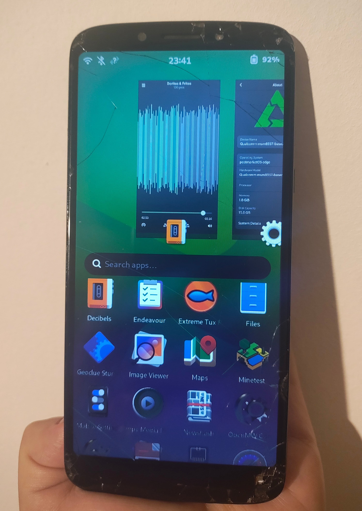

Motorola Moto E5 (motorola-nora)
| This device is supported as part of a generic port. Refer to Generic MSM89x7 (qcom-msm89x7) for installation instructions and more information. |
|
 Motorola Moto E5 (nora) running Phosh | |
| Manufacturer | Motorola |
|---|---|
| Name | Moto E5 |
| Codename | motorola-nora |
| Released | 2018 |
| Type | handset |
| Hardware | |
| Chipset | Qualcomm Snapdragon 425 (MSM8917) |
| CPU | 4x 1.40 GHz ARM Cortex-A53 |
| GPU | Adreno 308 |
| Display | 720x1440 |
| Storage | 16 GB |
| Memory | 2 GB |
| Architecture | aarch64 |
| Software | |
| Original software | Android |
| Original version | 8.0 |
| FOSS bootloader | lk2nd |
| postmarketOS | |
| Category | testing |
| Pre-built images | no |
| Mainline | yes |
| postmarketOS kernel | 6.13.0 |
| Generic port | Generic MSM89x7 (qcom-msm89x7) |
{kind=link}
| Flashing |
Works
|
|---|---|
| USB Networking |
Works
|
| Internal storage |
Works
|
| SD card |
Works
|
| Battery |
Works
|
| Screen |
Works
|
| Touchscreen |
Partial
|
| Multimedia | |
| 3D Acceleration |
Works
|
| Audio |
Works
|
| Camera |
Broken
|
| Camera Flash | |
| Connectivity | |
| WiFi |
Works
|
| Bluetooth |
Works
|
| GPS |
Broken
|
| NFC | |
| Modem | |
| Calls | |
| SMS | |
| Mobile data | |
| Miscellaneous | |
| FDE |
Works
|
| USB OTG |
Works
|
| Sensors | |
| Accelerometer |
Partial
|
| Magnetometer |
Broken
|
| Ambient Light |
Broken
|
| Proximity |
Partial
|
| Haptics |
Works
|
| Power Sensor | |
|
This device is based on the Snapdragon 425. See the SoC page for common tips, guides and troubleshooting steps |
Models
nora exists with both the MSM8917 and the MSM8920 SoC; only the MSM8917 variant is supported for now.
There are 5 possible display panels, only the 571_djn panel with its Novatek touchscreen has been tested. Other touchscreens have not been enabled.
nora is internally near identical to jeter (Moto G6 Play).
Contributors
Users owning this device
- ValPackett (Notes: Happily running msm89x7 kernel. Carrier locked modem. Damaged (weak) haptics motor by running too high voltage LOL)
Installation
| Support for this model hadn't been packaged JUST YET as of 2025-01-26 |
- Follow the Installation guide
| Warning: Flashing lk2nd is required, as it is a hard dependency. Without it the mainline kernel will not select the display panel (resulting in black screen on boot). |
$ pmbootstrap init # choose Vendor: qcom Device codename: msm89x7
$ pmbootstrap install
$ pmbootstrap flasher flash_lk2nd
$ pmbootstrap flasher flash_rootfs
WiFi/BT
Wi-Fi requires a manual step for now because the vendor partition contains the WCNSS_qcom_wlan_nv.bin and we don't have it packaged yet.
Copy WCNSS_qcom_wlan_nv.bin to /lib/firmware/qcom/msm8917/motorola/nora/WCNSS_qcom_wlan_nv.bin
Boot logs
Stock kernel (via TWRP recovery) →
<6>[ 0.000000,0] Booting Linux on physical CPU 0x100
<6>[ 0.000000,0] Initializing cgroup subsys cpu
<6>[ 0.000000,0] Initializing cgroup subsys cpuacct
<5>[ 0.000000,0] Linux version 3.18.71-perf-ge0bb937 (hudsoncm@ilclbld85) (gcc version 4.8 (GCC) ) #1 SMP PREEMPT Mon May 28 06:47:49 CDT 2018
<6>[ 0.000000,0] CPU: ARMv7 Processor [410fd034] revision 4 (ARMv7), cr=10c0383d
<6>[ 0.000000,0] CPU: PIPT / VIPT nonaliasing data cache, VIPT aliasing instruction cache
<6>[ 0.000000,0] Machine model: nora
<6>[ 0.000000,0] Reserved memory: reserved region for node 'other_ext_region@0': base 0x84300000, size 37 MiB
<6>[ 0.000000,0] Reserved memory: reserved region for node 'modem_region@0': base 0x86800000, size 80 MiB
<6>[ 0.000000,0] Reserved memory: reserved region for node 'adsp_fw_region@0': base 0x8b800000, size 17 MiB
<6>[ 0.000000,0] Reserved memory: reserved region for node 'wcnss_fw_region@0': base 0x8c900000, size 7 MiB
<6>[ 0.000000,0] Reserved memory: reserved region for node 'splash_region@83000000': base 0x90000000, size 20 MiB
<6>[ 0.000000,0] Reserved memory: reserved region for node 'ramoops_mem_region': base 0xae000000, size 0 MiB
<6>[ 0.000000,0] Reserved memory: reserved region for node 'tzlog_bck_region': base 0xae400000, size 0 MiB
<6>[ 0.000000,0] Reserved memory: reserved region for node 'wdog_cpuctx_region': base 0xae800000, size 0 MiB
<6>[ 0.000000,0] Removed memory: created DMA memory pool at 0x84300000, size 37 MiB
<6>[ 0.000000,0] Reserved memory: initialized node other_ext_region@0, compatible id removed-dma-pool
<6>[ 0.000000,0] Removed memory: created DMA memory pool at 0x86800000, size 80 MiB
<6>[ 0.000000,0] Reserved memory: initialized node modem_region@0, compatible id removed-dma-pool
<6>[ 0.000000,0] Removed memory: created DMA memory pool at 0x8b800000, size 17 MiB
<6>[ 0.000000,0] Reserved memory: initialized node adsp_fw_region@0, compatible id removed-dma-pool
<6>[ 0.000000,0] Removed memory: created DMA memory pool at 0x8c900000, size 7 MiB
<6>[ 0.000000,0] Reserved memory: initialized node wcnss_fw_region@0, compatible id removed-dma-pool
<6>[ 0.000000,0] Reserved memory: allocated memory for 'venus_region@0' node: base 0x8f000000, size 16 MiB
<6>[ 0.000000,0] Reserved memory: created CMA memory pool at 0x8f000000, size 16 MiB
<6>[ 0.000000,0] Reserved memory: initialized node venus_region@0, compatible id shared-dma-pool
<6>[ 0.000000,0] Reserved memory: allocated memory for 'secure_region@0' node: base 0xf8c00000, size 112 MiB
<6>[ 0.000000,0] Reserved memory: created CMA memory pool at 0xf8c00000, size 112 MiB
<6>[ 0.000000,0] Reserved memory: initialized node secure_region@0, compatible id shared-dma-pool
<6>[ 0.000000,0] Reserved memory: allocated memory for 'qseecom_region@0' node: base 0xf7c00000, size 16 MiB
<6>[ 0.000000,0] Reserved memory: created CMA memory pool at 0xf7c00000, size 16 MiB
<6>[ 0.000000,0] Reserved memory: initialized node qseecom_region@0, compatible id shared-dma-pool
<6>[ 0.000000,0] Reserved memory: allocated memory for 'adsp_region@0' node: base 0xf7800000, size 4 MiB
<6>[ 0.000000,0] Removed memory: created DMA memory pool at 0xf7800000, size 4 MiB
<6>[ 0.000000,0] Reserved memory: initialized node adsp_region@0, compatible id removed-dma-pool
<6>[ 0.000000,0] cma: Reserved 16 MiB at 0xf6800000
<6>[ 0.000000,0] Memory policy: Data cache writealloc
<7>[ 0.000000,0] On node 0 totalpages: 508528
<7>[ 0.000000,0] free_area_init_node: node 0, pgdat c1613ac0, node_mem_map e4fc9000
<7>[ 0.000000,0] Normal zone: 1216 pages used for memmap
<7>[ 0.000000,0] Normal zone: 0 pages reserved
<7>[ 0.000000,0] Normal zone: 140032 pages, LIFO batch:31
<7>[ 0.000000,0] HighMem zone: 2880 pages used for memmap
<7>[ 0.000000,0] HighMem zone: 368496 pages, LIFO batch:31
<6>[ 0.000000,0] psci: probing for conduit method from DT.
<6>[ 0.000000,0] psci: PSCIv1.0 detected in firmware.
<6>[ 0.000000,0] psci: Using standard PSCI v0.2 function IDs
<4>[ 0.000000,0] PERCPU: max_distance=0xb000 too large for vmalloc space 0x0
<6>[ 0.000000,0] PERCPU: Embedded 11 pages/cpu @e4ef7000 s14912 r8192 d21952 u45056
<7>[ 0.000000,0] pcpu-alloc: s14912 r8192 d21952 u45056 alloc=11*4096
<7>[ 0.000000,0] pcpu-alloc: [0] 0 [0] 1 [0] 2 [0] 3
<4>[ 0.000000,0] Built 1 zonelists in Zone order, mobility grouping on. Total pages: 507312
<5>[ 0.000000,0] Kernel command line: sched_enable_hmp=1 console=null androidboot.hardware=qcom user_debug=30 msm_rtb.filter=0x237 ehci-hcd.park=3 androidboot.bootdevice=7824900.sdhci lpm_levels.sleep_disabled=1 earlycon=msm_hsl_uart,0x78B0000 vmalloc=400M buildvariant=user androidboot.selinux=permissive buildvariant=eng androidboot.emmc=true androidboot.serialno=REDACTED androidboot.baseband=msm androidboot.mode=normal androidboot.device=nora androidboot.hwrev=0x8400 androidboot.radio=LATAM androidboot.powerup_reason=0x00004000 androidboot.bootreason=reboot msm_poweroff.download_mode=0 androidboot.fsg-id= androidboot.wifimacaddr=0C:CB:85:72:30:33,0C:CB:85:72:30:34 androidboot.btmacaddr=0C:CB:85:72:30:32 mdss_mdp.panel=1:dsi:0:qcom,mdss_dsi_mot_djn_571_hd_video_v0 androidboot.bootloader=0xBE4F androidboot.carrier=retar androidboot.poweroff_alarm=0 androidboot.hardware.sku=XT1944-3 androidboot.secure_hardware=1 androidboot.bl_state=2 androidboot.cid=0x32 androidboot.uid=5F62E417000000000000<6>[ 0.000000,0] PID hash table entries: 4096 (order: 2, 16384 bytes)
<6>[ 0.000000,0] Dentry cache hash table entries: 131072 (order: 7, 524288 bytes)
<6>[ 0.000000,0] Inode-cache hash table entries: 65536 (order: 6, 262144 bytes)
<4>[ 0.000000,0] Memory: 1716628K/2034112K available (13312K kernel code, 1158K rwdata, 5628K rodata, 502K init, 2002K bss, 153644K reserved, 163840K cma-reserved, 1322432K highmem)
<5>[ 0.000000,0] Virtual kernel memory layout:
<5>[ 0.000000,0] vector : 0xffff0000 - 0xffff1000 ( 4 kB)
<5>[ 0.000000,0] fixmap : 0xffc00000 - 0xfff00000 (3072 kB)
<5>[ 0.000000,0] vmalloc : 0xe6000000 - 0xff000000 ( 400 MB)
<5>[ 0.000000,0] lowmem : 0xcd000000 - 0xe6000000 ( 400 MB)
<5>[ 0.000000,0] vmalloc : 0xcb800000 - 0xcd000000 ( 24 MB)
<5>[ 0.000000,0] lowmem : 0xc6800000 - 0xcb800000 ( 80 MB)
<5>[ 0.000000,0] vmalloc : 0xc4300000 - 0xcd000000 ( 141 MB)
<5>[ 0.000000,0] lowmem : 0xc0000000 - 0xc4300000 ( 67 MB)
<5>[ 0.000000,0] pkmap : 0xbfe00000 - 0xc0000000 ( 2 MB)
<5>[ 0.000000,0] modules : 0xbf000000 - 0xbfe00000 ( 14 MB)
<5>[ 0.000000,0] .text : 0xc0008000 - 0xc0e00000 (14304 kB)
<5>[ 0.000000,0] .init : 0xc1400000 - 0xc147da40 ( 503 kB)
<5>[ 0.000000,0] .data : 0xc1500000 - 0xc1621ae4 (1159 kB)
<5>[ 0.000000,0] .bss : 0xc1621ba8 - 0xc18164f0 (2003 kB)
<6>[ 0.000000,0] SLUB: HWalign=64, Order=0-3, MinObjects=0, CPUs=4, Nodes=1
<6>[ 0.000000,0] HMP scheduling enabled.
<6>[ 0.000000,0] Preemptible hierarchical RCU implementation.
<6>[ 0.000000,0] RCU dyntick-idle grace-period acceleration is enabled.
<6>[ 0.000000,0] RCU restricting CPUs from NR_CPUS=8 to nr_cpu_ids=4.
<6>[ 0.000000,0] RCU: Adjusting geometry for rcu_fanout_leaf=16, nr_cpu_ids=4
<4>[ 0.000000,0]
<4>[ 0.000000,0] **********************************************************
<4>[ 0.000000,0] ** NOTICE NOTICE NOTICE NOTICE NOTICE NOTICE NOTICE **
<4>[ 0.000000,0] ** **
<4>[ 0.000000,0] ** trace_printk() being used. Allocating extra memory. **
<4>[ 0.000000,0] ** **
<4>[ 0.000000,0] ** This means that this is a DEBUG kernel and it is **
<4>[ 0.000000,0] ** unsafe for produciton use. **
<4>[ 0.000000,0] ** **
<4>[ 0.000000,0] ** If you see this message and you are not debugging **
<4>[ 0.000000,0] ** the kernel, report this immediately to your vendor! **
<4>[ 0.000000,0] ** **
<4>[ 0.000000,0] ** NOTICE NOTICE NOTICE NOTICE NOTICE NOTICE NOTICE **
<4>[ 0.000000,0] **********************************************************
<6>[ 0.000000,0] NR_IRQS:16 nr_irqs:16 16
<4>[ 0.000000,0] mpm_init_irq_domain(): Cannot find irq controller for qcom,gpio-parent
<3>[ 0.000000,0] MPM 1 irq mapping errored -517
<6>[ 0.000000,0] Offload RCU callbacks from all CPUs
<6>[ 0.000000,0] Offload RCU callbacks from CPUs: 0-3.
<6>[ 0.000000,0] Architected cp15 and mmio timer(s) running at 19.20MHz (virt/virt).
<6>[ 0.000006,0] sched_clock: 56 bits at 19MHz, resolution 52ns, wraps every 3579139424256ns
<6>[ 0.000018,0] Switching to timer-based delay loop, resolution 52ns
<6>[ 0.000032,0] Switched to clocksource arch_sys_counter
<6>[ 0.000646,0] Calibrating delay loop (skipped), value calculated using timer frequency.. 38.00 BogoMIPS (lpj=64000)
<6>[ 0.000659,0] pid_max: default: 32768 minimum: 301
<6>[ 0.000728,0] Security Framework initialized
<6>[ 0.000741,0] SELinux: Initializing.
<7>[ 0.000773,0] SELinux: Starting in permissive mode
<6>[ 0.000809,0] Mount-cache hash table entries: 2048 (order: 1, 8192 bytes)
<6>[ 0.000821,0] Mountpoint-cache hash table entries: 2048 (order: 1, 8192 bytes)
<6>[ 0.001477,0] Initializing cgroup subsys freezer
<6>[ 0.001516,0] CPU: Testing write buffer coherency: ok
<4>[ 0.001743,0] /cpus/cpu-map/cluster0: empty cluster
<6>[ 0.001914,0] Setting up static identity map for 0x80d1aef8 - 0x80d1af50
<4>[ 0.002933,0] NOHZ: local_softirq_pending 02
<6>[ 0.010411,0] MSM Memory Dump base table set up
<6>[ 0.010439,0] MSM Memory Dump apps data table set up
<6>[ 0.010494,0] Configuring XPU violations to be fatal errors
<4>[ 0.017143,1] CPU1: Booted secondary processor
<4>[ 0.021926,2] CPU2: Booted secondary processor
<4>[ 0.026778,3] CPU3: Booted secondary processor
<6>[ 0.026930,0] Brought up 4 CPUs
<6>[ 0.026956,0] SMP: Total of 4 processors activated (153.00 BogoMIPS).
<6>[ 0.026964,0] CPU: All CPU(s) started in SVC mode.
<6>[ 0.036548,2] VFP support v0.3: implementor 41 architecture 3 part 40 variant 3 rev 4
<6>[ 0.043778,2] pinctrl core: initialized pinctrl subsystem
<6>[ 0.044191,2] regulator-dummy: no parameters
<6>[ 0.116881,2] NET: Registered protocol family 16
<6>[ 0.122590,2] DMA: preallocated 256 KiB pool for atomic coherent allocations
<3>[ 0.123363,2] scm_call failed: func id 0x2000101, ret: -1, syscall returns: 0x0, 0x0, 0x0
<6>[ 0.130144,2] cpuidle: using governor ladder
<6>[ 0.143455,2] cpuidle: using governor menu
<6>[ 0.156786,2] cpuidle: using governor qcom
<3>[ 0.189145,2] spmi_pmic_arb 200f000.qcom,spmi: PMIC Arb Version-2 0x20010000
<6>[ 0.199620,2] msm_watchdog b017000.qcom,wdt: wdog absent resource not present
<6>[ 0.199999,2] msm_watchdog b017000.qcom,wdt: MSM Watchdog Initialized
<4>[ 0.206212,2] irq: no irq domain found for /soc/pinctrl@1000000 !
<6>[ 0.206468,2] platform soc:qcom,adsprpc-mem: assigned reserved memory node adsp_region@0
<6>[ 0.207267,2] platform 4080000.qcom,mss: assigned reserved memory node modem_region@0
<6>[ 0.207713,2] platform c200000.qcom,lpass: assigned reserved memory node adsp_fw_region@0
<6>[ 0.208151,2] platform a21b000.qcom,pronto: assigned reserved memory node wcnss_fw_region@0
<6>[ 0.208388,2] platform 1de0000.qcom,venus: assigned reserved memory node venus_region@0
<6>[ 0.209141,2] ACC: mem_acc_efuse_init: efuse_addr = 0x000a4000 (len=0x1000)
<3>[ 0.209325,2] ACC: mem_acc_parse_override_fuse_version_map: qcom,override-fuse-version-map tuple match not found
<6>[ 0.209466,2] mem_acc_corner: 0 <--> 0 mV at 0 mV
<4>[ 0.214265,2] irq: no irq domain found for /soc/pinctrl@1000000 !
<6>[ 0.214784,2] persistent_ram: persistent_ram: paddr: ae000000, vaddr: c4480000, buf size = 0x1fff4
<6>[ 0.214804,2] persistent_ram: persistent_ram: paddr: ae020000, vaddr: c4500000, buf size = 0x3fff4
<6>[ 0.214820,2] persistent_ram: persistent_ram: paddr: ae060000, vaddr: c4462000, buf size = 0x7f4
<6>[ 0.215631,2] console [pstore-1] enabled
<6>[ 0.215640,2] pstore: Registered ramoops as persistent store backend
<6>[ 0.215652,2] ramoops: attached 0x80000@0xae000000, ecc: 0/0
<6>[ 0.216794,2] hw-breakpoint: found 5 (+1 reserved) breakpoint and 4 watchpoint registers.
<6>[ 0.216807,2] hw-breakpoint: maximum watchpoint size is 8 bytes.
<4>[ 0.219012,2] __of_mpm_init(): MPM driver mapping exists
<4>[ 0.220723,2] msm_rpm_glink_dt_parse: qcom,rpm-glink compatible not matches
<6>[ 0.220736,2] msm_rpm_dev_probe: APSS-RPM communication over SMD
<6>[ 0.220748,2] smd_open() before smd_init()
<3>[ 0.221746,2] msm_mpm_dev_probe(): Cannot get clk resource for XO: -517
<3>[ 0.227229,2] smd_channel_probe_now: allocation table not initialized
<3>[ 0.227403,2] smd_channel_probe_now: allocation table not initialized
<3>[ 0.227568,2] smd_channel_probe_now: allocation table not initialized
<6>[ 0.233280,1] pm8917_s5: 1050 <--> 1350 mV at 1225 mV normal idle
<6>[ 0.233527,1] spm_regulator_probe: name=pm8917_s5, range=LV, voltage=1225000 uV, mode=AUTO, step rate=1200 uV/us
<6>[ 0.234254,1] cpr_efuse_init: apc_corner: efuse_addr = 0x000a4000 (len=0x1000)
<6>[ 0.234299,1] cpr_read_fuse_revision: apc_corner: fuse revision = 2
<6>[ 0.234317,1] cpr_parse_speed_bin_fuse: apc_corner: [row: 37]: 0x50802d2117e4625f, speed_bits = 0
<6>[ 0.234335,1] cpr_parse_pvs_version_fuse: apc_corner: [row: 37]: 0x50802d2117e4625f, pvs_version = 5
<6>[ 0.234441,1] cpr_pvs_init: apc_corner: pvs voltage: [1095000 1125000 1240000] uV
<6>[ 0.234454,1] cpr_pvs_init: apc_corner: ceiling voltage: [1155000 1225000 1350000] uV
<6>[ 0.234468,1] cpr_pvs_init: apc_corner: floor voltage: [1050000 1050000 1090000] uV
<6>[ 0.234672,1] cpr_init_cpr_parameters: apc_corner: up threshold = 2, down threshold = 4
<6>[ 0.234703,1] cpr_init_cpr_parameters: apc_corner: CPR is enabled by default.
<6>[ 0.234737,1] cpr_init_cpr_efuse: apc_corner: [row:67] = 0x248eee63efa92d2b
<6>[ 0.234762,1] cpr_init_cpr_efuse: apc_corner: Corner[1]: ro_sel = 2, target quot = 955
<6>[ 0.234776,1] cpr_init_cpr_efuse: apc_corner: Corner[2]: ro_sel = 2, target quot = 1007
<6>[ 0.234789,1] cpr_init_cpr_efuse: apc_corner: Corner[3]: ro_sel = 2, target quot = 1204
<6>[ 0.234831,1] cpr_adjust_target_quots: apc_corner: Corner[3]: adjusted target quot = 1254
<6>[ 0.234920,1] cpr_get_corner_quot_adjustment: apc_corner: fuse corner 2 quotient adjustment scaling factor: 0.388
<6>[ 0.234933,1] cpr_get_corner_quot_adjustment: apc_corner: fuse corner 3 quotient adjustment scaling factor: 0.804
<6>[ 0.234950,1] cpr_get_corner_quot_adjustment: apc_corner: adjusted quotient[1] = 955
<6>[ 0.234961,1] cpr_get_corner_quot_adjustment: apc_corner: adjusted quotient[2] = 1007
<6>[ 0.234972,1] cpr_get_corner_quot_adjustment: apc_corner: adjusted quotient[3] = 1131
<6>[ 0.234983,1] cpr_get_corner_quot_adjustment: apc_corner: adjusted quotient[4] = 1254
<6>[ 0.234994,1] cpr_get_corner_quot_adjustment: apc_corner: adjusted quotient[5] = 1254
<6>[ 0.235177,1] cpr_config: apc_corner: Timer count: 0x17700 (for 5000 us)
<6>[ 0.235579,0] apc_corner: 0 <--> 0 mV
<6>[ 0.241212,0] msm_thermal:vdd_restriction_reg_init Defer regulator vdd-dig probe
<3>[ 0.241230,0] msm_thermal:probe_vdd_rstr Err regulator init. err:-517. KTM continues.
<6>[ 0.241249,0] msm-thermal soc:qcom,msm-thermal: probe_vdd_rstr:Failed reading node=/soc/qcom,msm-thermal, key=qcom,max-freq-level. err=-517. KTM continues
<3>[ 0.241263,0] msm_thermal:msm_thermal_dev_probe Failed reading node=/soc/qcom,msm-thermal, key=qcom,online-hotplug-core. err:-517
<6>[ 0.242437,0] sps:sps is ready.
<6>[ 0.245141,0] cpu-clock-8939 b011050.qcom,cpu-clock-8939: No PVS version available. Defaulting to 0!
<6>[ 0.245157,0] cpu-clock-8939 b011050.qcom,cpu-clock-8939: Speed bin: 0 PVS Version: 0
<4>[ 0.248402,3] msm_rpm_glink_dt_parse: qcom,rpm-glink compatible not matches
<6>[ 0.248419,3] msm_rpm_dev_probe: APSS-RPM communication over SMD
<6>[ 0.249222,3] pm8917_s1: 1000 <--> 1225 mV at 1000 mV normal idle
<6>[ 0.250002,3] pm8917_s2_level: 0 <--> 0 mV at 0 mV normal idle
<6>[ 0.250589,3] pm8917_s2_floor_level: 0 <--> 0 mV at 0 mV normal idle
<6>[ 0.251116,3] pm8917_s2_level_ao: 0 <--> 0 mV at 0 mV normal idle
<6>[ 0.251800,3] pm8917_s3: 1300 mV normal idle
<6>[ 0.252488,3] pm8917_s4: 2050 mV normal idle
<6>[ 0.253161,3] pm8917_l2: 1200 mV normal idle
<6>[ 0.253898,3] pm8917_l3_level_ao: 0 <--> 0 mV at 0 mV normal idle
<6>[ 0.254413,3] pm8917_l3_level_so: 0 <--> 0 mV at 0 mV normal idle
<6>[ 0.255089,3] pm8917_l5: 1800 mV normal idle
<6>[ 0.256036,3] pm8917_l6: 1800 mV normal idle
<6>[ 0.256769,3] pm8917_l7: 1800 mV normal idle
<6>[ 0.257278,3] pm8917_l7_ao: 1800 mV normal idle
<6>[ 0.257986,3] pm8917_l8: 2850 <--> 2900 mV at 2900 mV normal idle
<6>[ 0.258680,3] pm8917_l9: 3000 <--> 3300 mV at 3000 mV normal idle
<6>[ 0.259953,3] pm8917_l10: 2800 <--> 3000 mV at 2800 mV normal idle
<6>[ 0.260719,3] pm8917_l11: 2950 mV normal idle
<6>[ 0.261425,3] pm8917_l12: 1800 <--> 2950 mV at 1800 mV normal idle
<6>[ 0.262148,3] pm8917_l13: 3075 mV normal idle
<6>[ 0.262864,3] pm8917_l14: 1800 <--> 3300 mV at 1800 mV normal idle
<6>[ 0.263618,3] pm8917_l15: 1800 <--> 3300 mV at 1800 mV normal idle
<6>[ 0.264348,3] pm8917_l16: 1800 mV normal idle
<6>[ 0.265070,3] pm8917_l17: 2850 mV normal idle
<6>[ 0.265799,3] pm8917_l19: 1225 <--> 1350 mV at 1225 mV normal idle
<6>[ 0.266500,3] pm8917_l22: 2900 mV normal idle
<6>[ 0.267200,3] pm8917_l23: 1200 mV normal idle
<6>[ 0.267881,3] pm8917_l18: 2700 mV normal idle
<3>[ 0.268324,3] msm_mpm_dev_probe(): Cannot get clk resource for XO: -517
<6>[ 0.269143,3] msm_thermal:sensor_mgr_init_threshold threshold id already initialized
<6>[ 0.269613,3] msm_thermal:vdd_restriction_reg_init Defer vdd rstr freq init.
<6>[ 0.270800,2] cpu-clock-8939 b011050.qcom,cpu-clock-8939: No PVS version available. Defaulting to 0!
<6>[ 0.270817,2] cpu-clock-8939 b011050.qcom,cpu-clock-8939: Speed bin: 0 PVS Version: 0
<6>[ 0.272156,2] qcom,gcc-8952 1800000.qcom,gcc: GPU speed bin: 0
<6>[ 0.291089,2] qcom,gcc-8952 1800000.qcom,gcc: Registered GCC clocks
<6>[ 0.292083,2] cpu-clock-8939 b011050.qcom,cpu-clock-8939: No PVS version available. Defaulting to 0!
<6>[ 0.292103,2] cpu-clock-8939 b011050.qcom,cpu-clock-8939: Speed bin: 0 PVS Version: 0
<6>[ 0.293120,2] populate_opp_table: clock-cpu-8939: OPP tables populated (cpu 0 and 3)
<6>[ 0.293135,2] print_opp_table: clock_cpu: a53_c1: OPP voltage for 960000000: 1095000
<6>[ 0.293148,2] print_opp_table: clock_cpu: a53_c1: OPP voltage for 1401000000: 1240000
<3>[ 0.355239,1] qcom,qpnp-pin qpnp-pin-15: qpnp_pin_probe: no device nodes specified in topology
<4>[ 0.355266,1] qcom,qpnp-pin: probe of qpnp-pin-15 failed with error -22
<3>[ 0.355834,1] msm_cpuss_dump soc:cpuss_dump: Couldn't get memory for dumping
<6>[ 0.358367,1] KPI: Bootloader start count = 63089
<6>[ 0.358382,1] KPI: Bootloader end count = 6155742
<6>[ 0.358392,1] KPI: Bootloader display count = 4279565616
<6>[ 0.358402,1] KPI: Bootloader load kernel count = 1951
<6>[ 0.358412,1] KPI: Kernel MPM timestamp = 6182962
<6>[ 0.358420,1] KPI: Kernel MPM Clock frequency = 32768
<6>[ 0.358447,1] socinfo_print: v0.10, id=303, ver=1.0, raw_id=86, raw_ver=0, hw_plat=8, hw_plat_ver=65536
<6>[ 0.358447,1] accessory_chip=0, hw_plat_subtype=0, pmic_model=65561, pmic_die_revision=65536 foundry_id=6 serial_number=400843359
<3>[ 0.359306,1] qpnp_pin_of_gpio_xlate: no such PMIC gpio 7 in device topology
<6>[ 0.359464,1] eldo2_pm8917: no parameters
<5>[ 0.360871,1] SCSI subsystem initialized
<6>[ 0.361690,1] usbcore: registered new interface driver usbfs
<6>[ 0.361774,1] usbcore: registered new interface driver hub
<6>[ 0.361930,1] usbcore: registered new device driver usb
<6>[ 0.363007,1] i2c-msm-v2 78b6000.i2c: probing driver i2c-msm-v2
<3>[ 0.363341,1] AXI: msm_bus_scale_register_client(): msm_bus_scale_register_client: Bus driver not ready.
<6>[ 0.363356,1] i2c-msm-v2 78b6000.i2c: msm_bus_scale_register_client(mstr-id:86):0 (not a problem)
<6>[ 0.364959,2] i2c-msm-v2 78b7000.i2c: probing driver i2c-msm-v2
<3>[ 0.365253,2] AXI: msm_bus_scale_register_client(): msm_bus_scale_register_client: Bus driver not ready.
<6>[ 0.365269,2] i2c-msm-v2 78b7000.i2c: msm_bus_scale_register_client(mstr-id:86):0 (not a problem)
<6>[ 0.366988,2] i2c-msm-v2 7af5000.i2c: probing driver i2c-msm-v2
<3>[ 0.367278,2] AXI: msm_bus_scale_register_client(): msm_bus_scale_register_client: Bus driver not ready.
<6>[ 0.367293,2] i2c-msm-v2 7af5000.i2c: msm_bus_scale_register_client(mstr-id:84):0 (not a problem)
<6>[ 0.368167,2] media: Linux media interface: v0.10
<6>[ 0.368242,2] Linux video capture interface: v2.00
<6>[ 0.368331,2] EDAC MC: Ver: 3.0.0
<6>[ 0.410239,3] cpufreq: driver msm up and running
<6>[ 0.410737,3] platform soc:qcom,ion:qcom,ion-heap@8: assigned reserved memory node secure_region@0
<6>[ 0.410963,3] platform soc:qcom,ion:qcom,ion-heap@27: assigned reserved memory node qseecom_region@0
<6>[ 0.411211,3] ION heap system created
<6>[ 0.411329,3] ION heap mm created at 0xf8c00000 with size 7000000
<6>[ 0.411343,3] ION heap qsecom created at 0xf7c00000 with size 1000000
<3>[ 0.411797,3] msm_bus_fabric_init_driver
<6>[ 0.424926,3] qcom,qpnp-power-on qpnp-power-on-4: PMIC@SID0 Power-on reason: Triggered from Hard Reset and 'cold' boot
<6>[ 0.424952,3] qcom,qpnp-power-on qpnp-power-on-4: PMIC@SID0: Power-off reason: Triggered from PS_HOLD (PS_HOLD/MSM controlled shutdown)
<6>[ 0.425142,3] input: qpnp_pon as /devices/virtual/input/input0
<6>[ 0.425525,3] pon_spare_reg: no parameters
<6>[ 0.425611,3] qcom,qpnp-power-on qpnp-power-on-13: No PON config. specified
<6>[ 0.425661,3] qcom,qpnp-power-on qpnp-power-on-13: PMIC@SID2 Power-on reason: Triggered from Hard Reset and 'cold' boot
<6>[ 0.425680,3] qcom,qpnp-power-on qpnp-power-on-13: PMIC@SID2: Power-off reason: Triggered from PS_HOLD (PS_HOLD/MSM controlled shutdown)
<6>[ 0.425854,3] PMIC@SID0: PM8937 v1.0 options: 0, 2, 0, 0
<6>[ 0.425949,3] PMIC@SID2: PMI8940 v2.0 options: 0, 0, 0, 0
<6>[ 0.427454,3] gdsc_venus: no parameters
<6>[ 0.427790,3] gdsc_mdss: no parameters
<6>[ 0.428112,3] gdsc_jpeg: no parameters
<6>[ 0.428706,3] gdsc_vfe: no parameters
<6>[ 0.429297,3] gdsc_vfe1: no parameters
<6>[ 0.429611,3] gdsc_cpp: no parameters
<6>[ 0.429923,3] gdsc_oxili_gx: no parameters
<6>[ 0.430191,3] gdsc_venus_core0: fast normal
<6>[ 0.430927,3] mdss_pll_probe: MDSS pll label = MDSS DSI 0 PLL
<6>[ 0.430937,3] mdss_pll_probe: mdss_pll_probe: label=MDSS DSI 0 PLL PLL SSC enabled
<4>[ 0.430960,3] mdss_pll_util_parse_dt_supply: : error reading ulp load. rc=-22
<4>[ 0.430973,3] mdss_pll_util_parse_dt_supply: : error reading ulp load. rc=-22
<6>[ 0.431652,3] dsi_pll_clock_register_lpm: Registered DSI PLL:0 clocks successfully
<6>[ 0.432723,3] msm_iommu 1f00000.qcom,iommu: device gfx_iommu (model: 500) mapped at c4760000, with 1 ctx banks
<6>[ 0.433461,3] msm_iommu 1e00000.qcom,iommu: device apps_iommu (model: 500) mapped at c4780000, with 21 ctx banks
<6>[ 0.440826,3] msm_iommu_ctx 1f08000.qcom,iommu-ctx: context gfx3d_user using bank 0
<6>[ 0.441007,3] msm_iommu_ctx 1e20000.qcom,iommu-ctx: context q6 using bank 0
<6>[ 0.441172,3] msm_iommu_ctx 1e21000.qcom,iommu-ctx: context adsp_sec_pixel using bank 1
<6>[ 0.441339,3] msm_iommu_ctx 1e22000.qcom,iommu-ctx: context mdp_1 using bank 2
<6>[ 0.441522,3] msm_iommu_ctx 1e23000.qcom,iommu-ctx: context venus_fw using bank 3
<6>[ 0.441685,3] msm_iommu_ctx 1e24000.qcom,iommu-ctx: context venus_sec_non_pixel using bank 4
<6>[ 0.441856,3] msm_iommu_ctx 1e25000.qcom,iommu-ctx: context venus_sec_bitstream using bank 5
<6>[ 0.442022,3] msm_iommu_ctx 1e26000.qcom,iommu-ctx: context venus_sec_pixel using bank 6
<6>[ 0.442221,3] msm_iommu_ctx 1e28000.qcom,iommu-ctx: context pronto_pil using bank 8
<6>[ 0.442417,3] msm_iommu_ctx 1e29000.qcom,iommu-ctx: context mss_nav using bank 9
<6>[ 0.442612,3] msm_iommu_ctx 1e2a000.qcom,iommu-ctx: context periph_rpm using bank 10
<6>[ 0.442806,3] msm_iommu_ctx 1e2b000.qcom,iommu-ctx: context lpass using bank 11
<6>[ 0.443010,3] msm_iommu_ctx 1e2f000.qcom,iommu-ctx: context adsp_io using bank 15
<6>[ 0.443208,3] msm_iommu_ctx 1e30000.qcom,iommu-ctx: context adsp_opendsp using bank 16
<6>[ 0.443425,3] msm_iommu_ctx 1e31000.qcom,iommu-ctx: context adsp_shared using bank 17
<6>[ 0.443624,3] msm_iommu_ctx 1e32000.qcom,iommu-ctx: context cpp using bank 18
<6>[ 0.443826,3] msm_iommu_ctx 1e33000.qcom,iommu-ctx: context jpeg_enc0 using bank 19
<6>[ 0.444025,3] msm_iommu_ctx 1e34000.qcom,iommu-ctx: context vfe using bank 20
<6>[ 0.444220,3] msm_iommu_ctx 1e35000.qcom,iommu-ctx: context mdp_0 using bank 21
<6>[ 0.444427,3] msm_iommu_ctx 1e36000.qcom,iommu-ctx: context venus_ns using bank 22
<6>[ 0.444628,3] msm_iommu_ctx 1e38000.qcom,iommu-ctx: context mss_mcdma using bank 24
<6>[ 0.444823,3] msm_iommu_ctx 1e37000.qcom,iommu-ctx: context access_control using bank 23
<6>[ 0.447911,3] Advanced Linux Sound Architecture Driver Initialized.
<6>[ 0.448981,3] Bluetooth: e49fdec8
<6>[ 0.449012,3] NET: Registered protocol family 31
<6>[ 0.449020,3] Bluetooth: e49fdec8
<6>[ 0.449029,3] Bluetooth: e49fdec0Bluetooth: e49fdea8
<6>[ 0.449067,3] Bluetooth: e49fdeb8<6>[ 0.449302,3] cfg80211: Calling CRDA to update world regulatory domain
<6>[ 0.449322,3] cfg80211: World regulatory domain updated:
<6>[ 0.449328,3] cfg80211: DFS Master region: unset
<6>[ 0.449334,3] cfg80211: (start_freq - end_freq @ bandwidth), (max_antenna_gain, max_eirp), (dfs_cac_time)
<6>[ 0.449343,3] cfg80211: (2402000 KHz - 2472000 KHz @ 40000 KHz), (N/A, 2000 mBm), (N/A)
<6>[ 0.449351,3] cfg80211: (2457000 KHz - 2482000 KHz @ 40000 KHz), (N/A, 2000 mBm), (N/A)
<6>[ 0.449359,3] cfg80211: (2474000 KHz - 2494000 KHz @ 20000 KHz), (N/A, 2000 mBm), (N/A)
<6>[ 0.449366,3] cfg80211: (5170000 KHz - 5250000 KHz @ 80000 KHz), (N/A, 2000 mBm), (N/A)
<6>[ 0.449374,3] cfg80211: (5250000 KHz - 5330000 KHz @ 80000 KHz), (N/A, 2000 mBm), (N/A)
<6>[ 0.449381,3] cfg80211: (5490000 KHz - 5710000 KHz @ 80000 KHz), (N/A, 2000 mBm), (N/A)
<6>[ 0.449388,3] cfg80211: (5735000 KHz - 5835000 KHz @ 80000 KHz), (N/A, 2000 mBm), (N/A)
<6>[ 0.449396,3] cfg80211: (57240000 KHz - 63720000 KHz @ 2160000 KHz), (N/A, 0 mBm), (N/A)
<6>[ 0.449900,1] ibb_reg: 4600 <--> 6000 mV at 6000 mV
<6>[ 0.450186,1] lab_reg: 4600 <--> 6000 mV at 6000 mV
<6>[ 0.452709,2] Switched to clocksource arch_sys_counter
<6>[ 0.485999,1] NET: Registered protocol family 2
<6>[ 0.486487,2] TCP established hash table entries: 8192 (order: 3, 32768 bytes)
<6>[ 0.486540,2] TCP bind hash table entries: 8192 (order: 4, 65536 bytes)
<6>[ 0.486623,2] TCP: Hash tables configured (established 8192 bind 8192)
<6>[ 0.486660,2] TCP: reno registered
<6>[ 0.486669,2] UDP hash table entries: 512 (order: 2, 16384 bytes)
<6>[ 0.486692,2] UDP-Lite hash table entries: 512 (order: 2, 16384 bytes)
<6>[ 0.486855,2] NET: Registered protocol family 1
<6>[ 0.487985,2] gcc-mdss-8952 soc:qcom,gcc-mdss@1800000: Registered GCC MDSS clocks.
<6>[ 0.489150,2] Trying to unpack rootfs image as initramfs...
<6>[ 0.913010,0] Report pwrkey press event at: 1970-01-01 00:00:00 UTC
<6>[ 0.975973,0] Report pwrkey release event at: 1970-01-01 00:00:00 UTC
<6>[ 2.426250,0] Freeing initrd memory: 5528K
<6>[ 2.429483,0] hw perfevents: enabled with ARMv8 Cortex-A53 PMU driver, 7 counters available
<6>[ 2.433283,1] futex hash table entries: 1024 (order: 4, 65536 bytes)
<6>[ 2.433352,1] audit: initializing netlink subsys (disabled)
<5>[ 2.433422,1] audit: type=2000 audit(2.433:1): initialized
<4>[ 2.433860,1] vmscan: error setting kswapd cpu affinity mask
<5>[ 2.438430,2] VFS: Disk quotas dquot_6.5.2
<4>[ 2.438550,2] Dquot-cache hash table entries: 1024 (order 0, 4096 bytes)
<6>[ 2.439571,2] exFAT: Version 1.2.9
<6>[ 2.440247,2] Registering sdcardfs 0.1
<6>[ 2.440397,2] fuse init (API version 7.23)
<7>[ 2.440866,2] SELinux: Registering netfilter hooks
<6>[ 2.442768,2] bounce: pool size: 64 pages
<6>[ 2.442881,2] Block layer SCSI generic (bsg) driver version 0.4 loaded (major 249)
<6>[ 2.442892,2] io scheduler noop registered
<6>[ 2.442901,2] io scheduler deadline registered
<6>[ 2.442997,2] io scheduler cfq registered (default)
<3>[ 2.447074,2] msm_dss_get_res_byname: 'vbif_nrt_phys' resource not found
<3>[ 2.447089,2] mdss_mdp_probe+0x18c/0x106c->msm_dss_ioremap_byname: 'vbif_nrt_phys' msm_dss_get_res_byname failed
<3>[ 2.447723,2] mdss_mdp_irq_clk_register: unable to get clk: lut_clk
<3>[ 2.448410,2] No change in context(0==0), skip
<6>[ 2.448897,2] mdss_mdp_pipe_addr_setup: type:0 ftchid:-1 xinid:0 num:0 rect:0 ndx:0x1 prio:0
<6>[ 2.448923,2] mdss_mdp_pipe_addr_setup: type:1 ftchid:-1 xinid:1 num:3 rect:0 ndx:0x8 prio:1
<6>[ 2.448931,2] mdss_mdp_pipe_addr_setup: type:1 ftchid:-1 xinid:5 num:4 rect:0 ndx:0x10 prio:2
<6>[ 2.448953,2] mdss_mdp_pipe_addr_setup: type:2 ftchid:-1 xinid:2 num:6 rect:0 ndx:0x40 prio:3
<6>[ 2.448972,2] mdss_mdp_pipe_addr_setup: type:3 ftchid:-1 xinid:7 num:10 rect:0 ndx:0x400 prio:0
<3>[ 2.448987,2] mdss_mdp_parse_dt_handler: Error from prop qcom,mdss-pipe-sw-reset-off : u32 array read
<3>[ 2.449113,2] mdss_mdp_parse_dt_handler: Error from prop qcom,mdss-ib-factor-overlap : u32 array read
<6>[ 2.449403,2] xlog_status: enable:0, panic:1, dump:2
<6>[ 2.450185,0] mdss_mdp_probe: mdss version = 0x100f0000, bootloader display is on, num 1, intf_sel=0x00000100
<3>[ 2.452900,1] mdss_smmu_util_parse_dt_clock: clocks are not defined
<6>[ 2.452933,1] mdss_smmu_probe: iommu v2 domain[0] mapping and clk register successful!
<3>[ 2.452961,1] mdss_smmu_util_parse_dt_clock: clocks are not defined
<6>[ 2.452973,1] mdss_smmu_probe: iommu v2 domain[2] mapping and clk register successful!
<4>[ 2.454178,1] mdss_dsi_get_dt_vreg_data: error reading ulp load. rc=-22
<4>[ 2.454196,1] mdss_dsi_get_dt_vreg_data: error reading ulp load. rc=-22
<4>[ 2.454212,1] mdss_dsi_get_dt_vreg_data: error reading ulp load. rc=-22
<6>[ 2.454949,1] mdss_dsi_ctrl_probe: DSI Ctrl name = MDSS DSI CTRL->0
<6>[ 2.455641,1] mdss_panel_parse_panel_config_dt: BL: panel=mipi_mot_video_djn_hd_571, manufacture_id(0xDA)= 0x01 controller_ver(0xDB)= 0x57 controller_drv_ver(0XDC)= 0x22, full=0x0000000000225701
<6>[ 2.455652,1] mdss_dsi_find_panel_of_node: cmdline:0:qcom,mdss_dsi_mot_djn_571_hd_video_v0 panel_name:qcom,mdss_dsi_mot_djn_571_hd_video_v0
<6>[ 2.455697,1] mdss_dsi_panel_init: Panel Name = mipi_mot_video_djn_hd_571
<6>[ 2.455925,1] mdss_dsi_panel_timing_from_dt: found new timing "qcom,mdss_dsi_mot_djn_571_hd_video_v0" (e49fd7a0)
<3>[ 2.455950,1] mdss_dsi_parse_dcs_cmds: failed, key=qcom,mdss-dsi-post-panel-on-command
<3>[ 2.455962,1] mdss_dsi_parse_dcs_cmds: failed, key=qcom,mdss-dsi-timing-switch-command
<4>[ 2.455969,1] mdss_dsi_panel_get_dsc_cfg_np: cannot find dsc config node:
<3>[ 2.456112,1] mdss_dsi_parse_dcs_cmds: failed, key=qcom,mdss-dsi-idle-on-command
<3>[ 2.456125,1] mdss_dsi_parse_dcs_cmds: failed, key=qcom,mdss-dsi-idle-off-command
<6>[ 2.456159,1] mdss_dsi_parse_panel_features: ulps feature disabled
<6>[ 2.456168,1] mdss_dsi_parse_panel_features: ulps during suspend feature disabled
<6>[ 2.456178,1] mdss_dsi_parse_dms_config: dynamic switch feature enabled: 0
<3>[ 2.456295,1] mdss_dsi_parse_dcs_cmds: failed, key=qcom,mdss-dsi-lp-mode-on
<3>[ 2.456308,1] mdss_dsi_parse_dcs_cmds: failed, key=qcom,mdss-dsi-lp-mode-off
<6>[ 2.456370,1] mdss_panel_parse_param_prop: HBM feature enabled with 2 dt cmds
<6>[ 2.456375,1] mdss_panel_parse_param_prop: HBM type = 1
<6>[ 2.456430,1] mdss_panel_parse_param_prop: CABC feature enabled with 3 dt cmds
<3>[ 2.456442,1] mdss_dsi_parse_dcs_cmds: failed, key=qcom,mdss-dsi-lp-mode-on
<3>[ 2.456455,1] mdss_dsi_parse_dcs_cmds: failed, key=qcom,mdss-dsi-lp-mode-off
<4>[ 2.456477,1] mdss_dsi_get_dt_vreg_data: error reading ulp load. rc=-22
<4>[ 2.456492,1] mdss_dsi_get_dt_vreg_data: error reading ulp load. rc=-22
<4>[ 2.456505,1] mdss_dsi_get_dt_vreg_data: error reading ulp load. rc=-22
<3>[ 2.456785,1] mdss_dsi_parse_gpio_params:4124, TE gpio not specified
<6>[ 2.456793,1] mdss_dsi_parse_gpio_params: bklt_en gpio not specified
<6>[ 2.456828,1] mdss_dsi_retrieve_ctrl_resources: phy_regulator_base=c470cb80 phy_regulator_size=30
<6>[ 2.456836,1] mdss_dsi_retrieve_ctrl_resources: ctrl_base=c45f6000 ctrl_size=300 phy_base=c4702400 phy_size=280
<6>[ 2.456951,1] dsi_panel_device_register: Continuous splash enabled
<6>[ 2.457204,1] mdss_register_panel: adding framebuffer device 1a94000.qcom,mdss_dsi_ctrl0
<6>[ 2.478504,1] mdss_dsi_ctrl_probe: Dsi Ctrl->0 initialized, DSI rev:0x10040002, PHY rev:0x1
<6>[ 2.478902,1] mdss_dsi_status_init: DSI status check interval:8000
<6>[ 2.479451,1] mdss_register_panel: adding framebuffer device soc:qcom,mdss_wb_panel
<6>[ 2.480387,1] mdss_fb_probe: fb0: split_mode:0 left:0 right:0
<6>[ 2.480952,1] mdss_fb_register: FrameBuffer[0] 720x1440 registered successfully!
<6>[ 2.481436,1] mdss_fb_probe: fb1: split_mode:0 left:0 right:0
<6>[ 2.481551,1] mdss_fb_register: FrameBuffer[1] 640x640 registered successfully!
<3>[ 2.481682,1] mdss_mdp_splash_parse_dt: splash mem child node is not present
<6>[ 2.481714,1] anx7805 anx7805_init: anx7805_init
<6>[ 2.481764,0] anx7805 anx7805_init_async: anx7805_init_async
<3>[ 2.485236,1] IPC_RTR: msm_ipc_router_smd_driver_register Already driver registered IPCRTR
<3>[ 2.485269,1] IPC_RTR: msm_ipc_router_smd_driver_register Already driver registered IPCRTR
<6>[ 2.490202,0] In memshare_probe, Memshare probe success
<5>[ 2.492426,0] msm_rpm_log_probe: OK
<6>[ 2.496434,0] subsys-pil-tz 1de0000.qcom,venus: for venus segments only will be dumped.
<4>[ 2.498821,0] pil-q6v5-mss 4080000.qcom,mss: Failed to find the pas_id.
<6>[ 2.499389,0] mmi_unit_info (SMEM) for modem: version = 0x03, device = 'nora', radio = 0x0, radio_str = 'LATAM', system_rev = 0x8400, system_serial = 0xREDACTED00000000, machine = 'Qualcomm Technologies, Inc. MSM ', barcode = 'REDACTED', baseband = '', carrier = 'retar', pu_reason = 0x00004000
<3>[ 2.499425,0] ACPU Bin is not available.
<6>[ 2.499485,0] mmi_storage_info :eMMC: 16GB SAMSUNG QE63MB FV=0000000000000003
<6>[ 2.500267,0] msm_serial_hs module loaded
<6>[ 2.519234,1] brd: module loaded
<6>[ 2.521302,1] loop: module loaded
<6>[ 2.521655,1] zram: Added device: zram0
<6>[ 2.522137,1] QSEECOM: qseecom_probe: qseecom.qsee_version = 0x1001000
<4>[ 2.522166,1] QSEECOM: qseecom_retrieve_ce_data: Device does not support PFE
<6>[ 2.522176,1] QSEECOM: qseecom_probe: qseecom clocks handled by other subsystem
<4>[ 2.522184,1] QSEECOM: qseecom_probe: qsee reentrancy support phase is not defined, setting to default 0
<4>[ 2.522942,1] QSEECOM: qseecom_probe: qseecom.whitelist_support = 1
<6>[ 2.525113,3] alsa-to-h2w soc:alsa_to_h2w: alsa_to_h2w_probe success
<4>[ 2.526107,3] i2c-core: driver [tabla-i2c-core] using legacy suspend method
<4>[ 2.526114,3] i2c-core: driver [tabla-i2c-core] using legacy resume method
<4>[ 2.526207,3] i2c-core: driver [wcd9xxx-i2c-core] using legacy suspend method
<4>[ 2.526213,3] i2c-core: driver [wcd9xxx-i2c-core] using legacy resume method
<4>[ 2.526307,3] i2c-core: driver [tasha-i2c-core] using legacy suspend method
<4>[ 2.526313,3] i2c-core: driver [tasha-i2c-core] using legacy resume method
<6>[ 2.526671,3] Loading pn544 driver
<6>[ 2.526982,3] QCE50: __qce_get_device_tree_data: BAM Apps EE is not defined, setting to default 1
<6>[ 2.527908,3] qce 720000.qcedev: Qualcomm Crypto 5.3.3 device found @0x720000
<6>[ 2.527920,3] qce 720000.qcedev: CE device = 0x0
<6>[ 2.527920,3] IO base, CE = 0xc4a80000
<6>[ 2.527920,3] Consumer (IN) PIPE 2, Producer (OUT) PIPE 3
<6>[ 2.527920,3] IO base BAM = 0x00000000
<6>[ 2.527920,3] BAM IRQ 141
<6>[ 2.527920,3] Engines Availability = 0x2010853
<6>[ 2.528119,3] sps:BAM 0x00704000 is registered.
<6>[ 2.528324,3] sps:BAM 0x00704000 (va:0xc4bc0000) enabled: ver:0x27, number of pipes:8
<6>[ 2.528568,3] QCE50: qce_sps_init: Qualcomm MSM CE-BAM at 0x0000000000704000 irq 141
<6>[ 2.531125,1] QCE50: __qce_get_device_tree_data: BAM Apps EE is not defined, setting to default 1
<6>[ 2.531977,1] qcrypto 720000.qcrypto: Qualcomm Crypto 5.3.3 device found @0x720000
<6>[ 2.531990,1] qcrypto 720000.qcrypto: CE device = 0x0
<6>[ 2.531990,1] IO base, CE = 0xc4f40000
<6>[ 2.531990,1] Consumer (IN) PIPE 4, Producer (OUT) PIPE 5
<6>[ 2.531990,1] IO base BAM = 0x00000000
<6>[ 2.531990,1] BAM IRQ 141
<6>[ 2.531990,1] Engines Availability = 0x2010853
<6>[ 2.532333,1] QCE50: qce_sps_init: Qualcomm MSM CE-BAM at 0x0000000000704000 irq 141
<6>[ 2.533986,1] qcrypto 720000.qcrypto: qcrypto-ecb-aes
<6>[ 2.534076,1] qcrypto 720000.qcrypto: qcrypto-cbc-aes
<6>[ 2.534161,1] qcrypto 720000.qcrypto: qcrypto-ctr-aes
<6>[ 2.534247,1] qcrypto 720000.qcrypto: qcrypto-ecb-des
<6>[ 2.534332,1] qcrypto 720000.qcrypto: qcrypto-cbc-des
<6>[ 2.534417,1] qcrypto 720000.qcrypto: qcrypto-ecb-3des
<6>[ 2.534507,1] qcrypto 720000.qcrypto: qcrypto-cbc-3des
<6>[ 2.534593,1] qcrypto 720000.qcrypto: qcrypto-xts-aes
<6>[ 2.534678,1] qcrypto 720000.qcrypto: qcrypto-sha1
<6>[ 2.534763,1] qcrypto 720000.qcrypto: qcrypto-sha256
<6>[ 2.534850,1] qcrypto 720000.qcrypto: qcrypto-aead-hmac-sha1-cbc-aes
<6>[ 2.534936,1] qcrypto 720000.qcrypto: qcrypto-aead-hmac-sha1-cbc-des
<6>[ 2.535024,1] qcrypto 720000.qcrypto: qcrypto-aead-hmac-sha1-cbc-3des
<6>[ 2.535114,1] qcrypto 720000.qcrypto: qcrypto-aead-hmac-sha256-cbc-aes
<6>[ 2.535204,1] qcrypto 720000.qcrypto: qcrypto-aead-hmac-sha256-cbc-des
<6>[ 2.535292,1] qcrypto 720000.qcrypto: qcrypto-aead-hmac-sha256-cbc-3des
<6>[ 2.535379,1] qcrypto 720000.qcrypto: qcrypto-hmac-sha1
<6>[ 2.535466,1] qcrypto 720000.qcrypto: qcrypto-hmac-sha256
<6>[ 2.535556,1] qcrypto 720000.qcrypto: qcrypto-aes-ccm
<6>[ 2.535642,1] qcrypto 720000.qcrypto: qcrypto-rfc4309-aes-ccm
<3>[ 2.536840,1] qcom_ice_get_device_tree_data: No vdd-hba-supply regulator, assuming not needed
<6>[ 2.537051,1] ICE IRQ = 143
<6>[ 2.538144,1] SCSI Media Changer driver v0.25
<6>[ 2.539721,1] tun: Universal TUN/TAP device driver, 1.6
<6>[ 2.539729,1] tun: (C) 1999-2004 Max Krasnyansky <maxk@qualcomm.com>
<6>[ 2.541888,1] PPP generic driver version 2.4.2
<6>[ 2.541976,1] PPP BSD Compression module registered
<6>[ 2.541987,1] PPP Deflate Compression module registered
<6>[ 2.542008,1] PPP MPPE Compression module registered
<6>[ 2.542027,1] NET: Registered protocol family 24
<6>[ 2.542631,1] wcnss_wlan probed in built-in mode
<6>[ 2.543308,1] pegasus: v0.9.3 (2013/04/25), Pegasus/Pegasus II USB Ethernet driver
<6>[ 2.543412,1] usbcore: registered new interface driver pegasus
<6>[ 2.543465,1] usbcore: registered new interface driver asix
<6>[ 2.543513,1] usbcore: registered new interface driver ax88179_178a
<6>[ 2.543556,1] usbcore: registered new interface driver cdc_ether
<6>[ 2.543597,1] usbcore: registered new interface driver net1080
<6>[ 2.543640,1] usbcore: registered new interface driver cdc_subset
<6>[ 2.543681,1] usbcore: registered new interface driver zaurus
<6>[ 2.543724,1] usbcore: registered new interface driver MOSCHIP usb-ethernet driver
<6>[ 2.543918,1] usbcore: registered new interface driver cdc_ncm
<3>[ 2.545330,0] scm_call failed: func id 0x2000c16, ret: -1, syscall returns: 0x0, 0x0, 0x0
<6>[ 2.545340,0] hyp_assign_table: Failed to assign memory protection, ret = -5
<3>[ 2.545349,0] msm_sharedmem: setup_shared_ram_perms: hyp_assign_phys failed IPA=0x0160xf6c00000 size=1572864 err=-5
<6>[ 2.545402,1] msm_sharedmem: sharedmem_register_qmi: qmi init successful
<6>[ 2.545458,0] msm_sharedmem: msm_sharedmem_probe: Device created for client 'rmtfs'
<6>[ 2.546260,0] msm_otg 78db000.usb: msm_otg probe
<6>[ 2.550393,0] msm_otg 78db000.usb: OTG regs = c4774000
<6>[ 2.555723,0] ehci_hcd: USB 2.0 'Enhanced' Host Controller (EHCI) Driver
<6>[ 2.555738,0] ehci-msm: Qualcomm On-Chip EHCI Host Controller
<3>[ 2.556207,0] Unable to get vbus_otg
<3>[ 2.556218,0] msm_hsusb_host msm_hsusb_host: unable to register with transceiver
<6>[ 2.556337,0] usbcore: registered new interface driver cdc_acm
<6>[ 2.556343,0] cdc_acm: USB Abstract Control Model driver for USB modems and ISDN adapters
<6>[ 2.556400,0] usbcore: registered new interface driver usb-storage
<6>[ 2.556438,0] usbcore: registered new interface driver ums-alauda
<6>[ 2.556476,0] usbcore: registered new interface driver ums-cypress
<6>[ 2.556513,0] usbcore: registered new interface driver ums-datafab
<6>[ 2.556551,0] usbcore: registered new interface driver ums-freecom
<6>[ 2.556588,0] usbcore: registered new interface driver ums-isd200
<6>[ 2.556627,0] usbcore: registered new interface driver ums-jumpshot
<6>[ 2.556668,0] usbcore: registered new interface driver ums-karma
<6>[ 2.556739,0] usbcore: registered new interface driver ums-onetouch
<6>[ 2.556778,0] usbcore: registered new interface driver ums-sddr09
<6>[ 2.556816,0] usbcore: registered new interface driver ums-sddr55
<6>[ 2.556853,0] usbcore: registered new interface driver ums-usbat
<6>[ 2.556946,0] usbcore: registered new interface driver usbserial
<6>[ 2.556991,0] usbcore: registered new interface driver usb_ehset_test
<6>[ 2.557631,1] gbridge_init: gbridge_init successs.
<6>[ 2.558466,1] mousedev: PS/2 mouse device common for all mice
<6>[ 2.558662,1] usbcore: registered new interface driver xpad
<3>[ 2.558969,1] focaltech_ts 3-0038: Cannot parse config_modifier-names: -22
<6>[ 2.559127,1] input: focaltech_ts as /devices/soc/78b7000.i2c/i2c-3/3-0038/input/input1
<4>[ 2.559226,1] 3-0038 supply vdd not found, using dummy regulator
<3>[ 2.783615,1] i2c-msm-v2 78b7000.i2c: msm_bus_scale_register_client(mstr-id:86):0xe (ok)
<3>[ 2.783750,1] i2c-msm-v2 78b7000.i2c: NACK: slave not responding, ensure its powered: msgs(n:2 cur:0 tx) bc(rx:1 tx:1) mode:FIFO slv_addr:0x38 MSTR_STS:0x0d1300c8 OPER:0x00000010
<3>[ 2.783777,1] focaltech_ts 3-0038: ft_i2c_read: i2c read error.
<3>[ 2.783785,1] focaltech_ts 3-0038: version read failed
<3>[ 2.837677,1] [NVT-ts] nvt_driver_init 1865: start
<3>[ 2.837720,1] [NVT-ts] nvt_ts_probe 1240: start
<3>[ 2.837735,1] [NVT-ts] nvt_parse_dt 875: novatek,irq-gpio=65
<3>[ 2.850067,1] [NVT-ts] nvt_bootloader_reset 386: xlixiang---enter-nvt_bootloader_reset
<3>[ 2.923812,1] [NVT-ts] nvt_ts_check_chip_ver_trim 1177: buf[1]=0x00, buf[2]=0x00, buf[3]=0x02, buf[4]=0x25, buf[5]=0x65, buf[6]=0x03
<3>[ 2.923820,1] [NVT-ts] nvt_ts_check_chip_ver_trim 1196: This is NVT touch IC
<3>[ 2.923827,1] [NVT-ts] nvt_bootloader_reset 386: xlixiang---enter-nvt_bootloader_reset
<3>[ 2.963396,1] [NVT-ts] nvt_check_fw_reset_state 491: xlixiang---enter-nvt_check_fw_reset_state
<3>[ 2.991285,1] [NVT-ts] nvt_read_pid 544: PID=6001
<6>[ 2.991645,1] input: NVTCapacitiveTouchScreen as /devices/virtual/input/input2
<3>[ 2.991723,1] [NVT-ts] nvt_ts_probe 1372: int_trigger_type=1
<3>[ 2.991784,1] [NVT-ts] nvt_ts_probe 1384: request irq 219 succeed
<3>[ 2.991896,1] [NVT-ts] nvt_flash_proc_init 755: Succeeded!
<3>[ 2.991903,1] [NVT-ts] nvt_flash_proc_init 758: ============================================================
<3>[ 2.991910,1] [NVT-ts] nvt_flash_proc_init 759: Create /proc/NVTflash
<3>[ 2.991916,1] [NVT-ts] nvt_flash_proc_init 760: ============================================================
<3>[ 2.991927,1] [NVT-ts] nvt_extra_proc_init 687: create proc/nvt_fw_version Succeeded!
<3>[ 2.991937,1] [NVT-ts] nvt_extra_proc_init 695: create proc/nvt_baseline Succeeded!
<3>[ 2.991947,1] [NVT-ts] nvt_extra_proc_init 703: create proc/nvt_raw Succeeded!
<3>[ 2.991957,1] [NVT-ts] nvt_extra_proc_init 711: create proc/nvt_diff Succeeded!
<3>[ 2.991966,1] [NVT-ts] nvt_fw_class_init 1161: assigned minor 98
<3>[ 2.992053,1] [NVT-ts] nvt_fw_class_init 1188: create /sys/class/touchscreen/NVT-ts Succeeded!
<3>[ 2.992105,1] [NVT-ts] nvt_mp_proc_init 1958: Not found novatek,mp-support-dt, use default setting
<3>[ 2.992112,1] [NVT-ts] nvt_mp_proc_init 1961: create /proc/nvt_selftest Succeeded!
<3>[ 2.992123,1] [NVT-ts] nvt_mp_proc_init 1972: create /proc/nvt_read_data Succeeded!
<3>[ 2.992130,1] [NVT-ts] nvt_ts_probe 1468: end
<6>[ 2.992164,1] nvt_driver_init: finished
<6>[ 2.993227,1] input: hbtp_vm as /devices/virtual/input/input3
<3>[ 2.993527,1] et320_init enter
<3>[ 2.994269,1] etspi_probe initial
<3>[ 2.994297,1] etspi_parse_dt: sleepPin=127
<3>[ 2.994305,1] etspi_parse_dt: drdyPin=48
<6>[ 2.994313,1] etspi_parse_dt: 3.3v power pin=45
<6>[ 2.994321,1] etspi_parse_dt: 18v power pin=31
<3>[ 2.994327,1] etspi_parse_dt is successful
<3>[ 2.994332,1] etspi_platformInit
<3>[ 2.994346,1] etspi: vdd_18v_Pin set to high
<3>[ 2.995358,1] etspi: vcc_33v_Pin set to high
<3>[ 2.997369,1] etspi: reset to high
<3>[ 2.997380,1] ets320: etspi_platformInit successful status=0
<3>[ 2.997450,1] Egis navigation driver, egis_input device init
<3>[ 2.997629,1] Egis navigation driver, uinput_egis_init
<3>[ 2.997752,0] nav_input_thread enter
<6>[ 2.997886,1] input: uinput-egis as /devices/virtual/input/input4
<3>[ 2.997959,1] etspi:etspi_reset
<3>[ 3.053396,1] add_timer ----
<3>[ 3.053403,1] etspi_probe : initialize success 0
<3>[ 3.053582,1] et320_init done
<6>[ 3.053703,1] SX9310 sx9310_probe()
<3>[ 3.053940,1] i2c-msm-v2 78b6000.i2c: msm_bus_scale_register_client(mstr-id:86):0xf (ok)
<6>[ 3.054150,1] SX9310 sx9310 read_register for 0 time Addr: 0x42 Return: 0x1
<6>[ 3.054156,1] SX9310 sx9310 detect success!
<6>[ 3.054173,1] SX9310 read dtsi 0x12:0x02 set reg
<6>[ 3.054179,1] SX9310 read dtsi 0x13:0x0a set reg
<6>[ 3.054185,1] SX9310 read dtsi 0x15:0xc2 set reg
<6>[ 3.054190,1] SX9310 read dtsi 0x16:0x30 set reg
<6>[ 3.054196,1] SX9310 read dtsi 0x17:0x4b set reg
<6>[ 3.054202,1] SX9310 read dtsi 0x18:0x41 set reg
<6>[ 3.054208,1] SX9310 read dtsi 0x19:0x41 set reg
<6>[ 3.054213,1] SX9310 read dtsi 0x1a:0x18 set reg
<6>[ 3.054220,1] SX9310 read dtsi 0x21:0x1a set reg
<6>[ 3.054225,1] SX9310 read dtsi 0x22:0x08 set reg
<6>[ 3.054231,1] SX9310 read dtsi 0x23:0x20 set reg
<6>[ 3.054238,1] SX9310 Initialized Main Memory: 0xc38c1300
<6>[ 3.054245,1] SX9310 Initialized Device Specific Memory: 0xc3a5c4c0
<6>[ 3.054395,1] input: SX9310 Cap Touch top as /devices/virtual/input/input5
<6>[ 3.054600,1] input: SX9310 Cap Touch bottom as /devices/virtual/input/input6
<6>[ 3.055060,1] SX9310 cap_vdd regulator is on
<6>[ 3.055372,1] SX9310 cap_svdd regulator is on
<6>[ 3.055529,1] SX9310 registered with threaded irq (213)
<6>[ 3.055651,1] SX9310 Software Reset. Waiting device back to continue.
<4>[ 3.055728,0] irq 21, desc: e4329840, depth: 0, count: 0, unhandled: 0
<4>[ 3.055735,0] ->handle_irq(): c03f5988, msm_gpio_irq_handler+0x0/0x118
<4>[ 3.055748,0] ->irq_data.chip(): c1531158, gic_chip+0x0/0x74
<4>[ 3.055759,0] ->action(): (null)
<4>[ 3.055765,0] IRQ_NOPROBE set
<4>[ 3.055770,0] IRQ_NOREQUEST set
<4>[ 3.055775,0] IRQ_NOTHREAD set
<6>[ 3.356757,1] SX9310 Device back from the reset, continuing. NIRQ = 1
<6>[ 3.356763,1] SX9310 Going to Setup I2C Registers
<6>[ 3.460367,1] SX9310 Exiting initialize(). NIRQ = 0
<6>[ 3.460751,1] SX9310 usb is not present
<4>[ 3.460784,1] i2c-core: driver [sx9310] using legacy suspend method
<4>[ 3.460790,1] i2c-core: driver [sx9310] using legacy resume method
<3>[ 3.460897,1] msm8917-pinctrl 1000000.pinctrl: pin GPIO_59 already requested by 2-0028; cannot claim for 2-0020
<3>[ 3.460907,1] msm8917-pinctrl 1000000.pinctrl: pin-59 (2-0020) status -22
<3>[ 3.460916,1] msm8917-pinctrl 1000000.pinctrl: could not request pin 59 (GPIO_59) from group gpio59 on device 1000000.pinctrl
<3>[ 3.460924,1] abov_sar 2-0020: Error applying setting, reverse things back
<6>[ 3.460942,1] ABOVabov_probe()
<3>[ 3.461019,1] i2c-msm-v2 78b6000.i2c: NACK: slave not responding, ensure its powered: msgs(n:2 cur:0 tx) bc(rx:1 tx:1) mode:FIFO slv_addr:0x20 MSTR_STS:0x091343c8 OPER:0x00000010
<3>[ 3.461107,1] i2c-msm-v2 78b6000.i2c: NACK: slave not responding, ensure its powered: msgs(n:1 cur:0 tx) bc(rx:0 tx:2) mode:FIFO slv_addr:0x20 MSTR_STS:0x091343c8 OPER:0x00000090
<3>[ 3.461128,1] ABOVSEND : fail - addr:0x20 data:0xac 0x5b... ret:-107
<3>[ 3.461203,1] i2c-msm-v2 78b6000.i2c: NACK: slave not responding, ensure its powered: msgs(n:2 cur:0 tx) bc(rx:1 tx:1) mode:FIFO slv_addr:0x20 MSTR_STS:0x091343c8 OPER:0x00000010
<3>[ 3.461292,1] i2c-msm-v2 78b6000.i2c: NACK: slave not responding, ensure its powered: msgs(n:1 cur:0 tx) bc(rx:0 tx:2) mode:FIFO slv_addr:0x20 MSTR_STS:0x091343c8 OPER:0x00000090
<3>[ 3.461312,1] ABOVSEND : fail - addr:0x20 data:0xac 0x5b... ret:-107
<3>[ 3.461387,1] i2c-msm-v2 78b6000.i2c: NACK: slave not responding, ensure its powered: msgs(n:2 cur:0 tx) bc(rx:1 tx:1) mode:FIFO slv_addr:0x20 MSTR_STS:0x091343c8 OPER:0x00000010
<3>[ 3.461475,1] i2c-msm-v2 78b6000.i2c: NACK: slave not responding, ensure its powered: msgs(n:1 cur:0 tx) bc(rx:0 tx:2) mode:FIFO slv_addr:0x20 MSTR_STS:0x091343c8 OPER:0x00000090
<3>[ 3.461495,1] ABOVSEND : fail - addr:0x20 data:0xac 0x5b... ret:-107
<6>[ 3.461501,1] ABOVabov detect failed!!!
<4>[ 3.461530,1] i2c-core: driver [abov_sar] using legacy suspend method
<4>[ 3.461536,1] i2c-core: driver [abov_sar] using legacy resume method
<6>[ 3.462300,1] qcom,qpnp-rtc qpnp-rtc-7: rtc core: registered qpnp_rtc as rtc0
<6>[ 3.462317,1] Current shipmode info is 0x88e = 0x61
<4>[ 3.462324,1] qcom,qpnp-rtc qpnp-rtc-7: Disable Shipmode alarm
<3>[ 3.462357,1] Current shipmode info is 0x88e = 0x61
<3>[ 3.462378,1] Write shipmode info to 0x88e with 0x0
<6>[ 3.462542,1] i2c /dev entries driver
<3>[ 3.467065,1] /soc/qcom,cam_smmu/msm_cam_smmu_cb1: could not get #iommu-cells for /soc/qcom,iommu@1e00000
<3>[ 3.467589,1] CAM-SMMU cam_populate_smmu_context_banks:1586 Invalid pointer of ctx : vfe_secure rc = -517
<3>[ 3.467596,1] CAM-SMMU cam_smmu_probe:1636 Error: populating context banks
<4>[ 3.467609,1] msm_cam_smmu: probe of soc:qcom,cam_smmu:msm_cam_smmu_cb2 failed with error -12
<3>[ 3.467677,1] /soc/qcom,cam_smmu/msm_cam_smmu_cb3: could not get #iommu-cells for /soc/qcom,iommu@1e00000
<3>[ 3.467949,1] /soc/qcom,cam_smmu/msm_cam_smmu_cb4: could not get #iommu-cells for /soc/qcom,iommu@1e00000
<3>[ 3.468832,1] CAM-SMMU cam_populate_smmu_context_banks:1586 Invalid pointer of ctx : vfe_secure rc = -517
<3>[ 3.468840,1] CAM-SMMU cam_smmu_probe:1636 Error: populating context banks
<4>[ 3.468851,1] msm_cam_smmu: probe of soc:qcom,cam_smmu:msm_cam_smmu_cb2 failed with error -12
<3>[ 3.471123,1] msm_camera_get_dt_vreg_data:1198 number of entries is 0 or not present in dts
<3>[ 3.474045,1] msm_camera_get_dt_vreg_data:1198 number of entries is 0 or not present in dts
<3>[ 3.475486,1] msm_camera_get_dt_vreg_data:1198 number of entries is 0 or not present in dts
<3>[ 3.478723,1] msm_camera_get_dt_vreg_data:1198 number of entries is 0 or not present in dts
<3>[ 3.480349,1] msm_camera_get_dt_vreg_data:1198 number of entries is 0 or not present in dts
<3>[ 3.481925,1] msm_camera_get_dt_vreg_data:1198 number of entries is 0 or not present in dts
<5>[ 3.483045,1] msm_actuator_platform_probe:2088 No valid actuator GPIOs data
<3>[ 3.483954,1] msm_eeprom_platform_probe failed 1752
<3>[ 3.484356,1] msm_eeprom_platform_probe failed 1752
<3>[ 3.484747,1] msm_eeprom_platform_probe failed 1752
<3>[ 3.485127,1] msm_eeprom_platform_probe failed 1752
<3>[ 3.486193,1] msm_flash_get_pmic_source_info:1000 alternate current: read failed
<3>[ 3.486202,1] msm_flash_get_pmic_source_info:1020 alternate max-current: read failed
<3>[ 3.486210,1] msm_flash_get_pmic_source_info:1040 alternate duration: read failed
<3>[ 3.486257,1] msm_flash_get_pmic_source_info:1000 alternate current: read failed
<3>[ 3.486264,1] msm_flash_get_pmic_source_info:1020 alternate max-current: read failed
<3>[ 3.486271,1] msm_flash_get_pmic_source_info:1040 alternate duration: read failed
<3>[ 3.486319,1] msm_flash_get_pmic_source_info:1110 alternate current: read failed
<3>[ 3.486326,1] msm_flash_get_pmic_source_info:1130 alternate current: read failed
<3>[ 3.486373,1] msm_flash_get_pmic_source_info:1110 alternate current: read failed
<3>[ 3.486380,1] msm_flash_get_pmic_source_info:1130 alternate current: read failed
<5>[ 3.486388,1] msm_flash_get_dt_data:1203 No valid flash GPIOs data
<3>[ 3.486395,1] msm_camera_get_dt_vreg_data:1198 number of entries is 0 or not present in dts
<3>[ 3.487614,1] adp1660 i2c_add_driver success
<4>[ 3.494808,1] ------------[ cut here ]------------
<4>[ 3.494827,1] WARNING: CPU: 1 PID: 1 at ../../../../../../kernel/drivers/clk/msm/clock-local2.c:233 rcg_clk_enable+0x34/0x98()
<4>[ 3.494834,1] Attempting to prepare camss_top_ahb_clk_src before setting its rate. Set the rate first!
<4>[ 3.494839,1] Modules linked in:
<4>[ 3.494849,1] CPU: 1 PID: 1 Comm: swapper/0 Not tainted 3.18.71-perf-ge0bb937 #1
<4>[ 3.494867,1] [<c010e00c>] (unwind_backtrace) from [<c010aa64>] (show_stack+0x10/0x14)
<4>[ 3.494879,1] [<c010aa64>] (show_stack) from [<c0d1020c>] (dump_stack+0x78/0x98)
<4>[ 3.494892,1] [<c0d1020c>] (dump_stack) from [<c0125f48>] (warn_slowpath_common+0x64/0x88)
<4>[ 3.494904,1] [<c0125f48>] (warn_slowpath_common) from [<c0125f98>] (warn_slowpath_fmt+0x2c/0x3c)
<4>[ 3.494915,1] [<c0125f98>] (warn_slowpath_fmt) from [<c0a1fdbc>] (rcg_clk_enable+0x34/0x98)
<4>[ 3.494926,1] [<c0a1fdbc>] (rcg_clk_enable) from [<c0a1cad8>] (clk_enable+0x158/0x1e4)
<4>[ 3.494935,1] [<c0a1cad8>] (clk_enable) from [<c0a1ca00>] (clk_enable+0x80/0x1e4)
<4>[ 3.494947,1] [<c0a1ca00>] (clk_enable) from [<c08191b0>] (msm_camera_clk_enable+0xe8/0x1d8)
<4>[ 3.494960,1] [<c08191b0>] (msm_camera_clk_enable) from [<c083cb38>] (cpp_init_hardware+0xa0/0x468)
<4>[ 3.494970,1] [<c083cb38>] (cpp_init_hardware) from [<c083d1ec>] (cpp_probe+0x2ec/0x65c)
<4>[ 3.494982,1] [<c083d1ec>] (cpp_probe) from [<c058c388>] (platform_drv_probe+0x30/0x78)
<4>[ 3.494994,1] [<c058c388>] (platform_drv_probe) from [<c058a890>] (driver_probe_device+0xb8/0x1f0)
<4>[ 3.495005,1] [<c058a890>] (driver_probe_device) from [<c058aa30>] (__driver_attach+0x68/0x8c)
<4>[ 3.495015,1] [<c058aa30>] (__driver_attach) from [<c0589164>] (bus_for_each_dev+0x70/0x84)
<4>[ 3.495026,1] [<c0589164>] (bus_for_each_dev) from [<c058a0e4>] (bus_add_driver+0xc8/0x1e0)
<4>[ 3.495036,1] [<c058a0e4>] (bus_add_driver) from [<c058b5dc>] (driver_register+0x9c/0xe0)
<4>[ 3.495048,1] [<c058b5dc>] (driver_register) from [<c0100aa8>] (do_one_initcall+0x1a8/0x1e4)
<4>[ 3.495060,1] [<c0100aa8>] (do_one_initcall) from [<c1400dd8>] (kernel_init_freeable+0x11c/0x1e0)
<4>[ 3.495071,1] [<c1400dd8>] (kernel_init_freeable) from [<c0d089a0>] (kernel_init+0x8/0x10c)
<4>[ 3.495082,1] [<c0d089a0>] (kernel_init) from [<c01062b8>] (ret_from_fork+0x14/0x3c)
<4>[ 3.495117,1] ---[ end trace 817464920bca3488 ]---
<6>[ 3.495145,1] MSM-CPP cpp_init_hardware:1005 CPP HW Version: 0x40030004
<3>[ 3.495157,1] MSM-CPP cpp_init_hardware:1023 stream_cnt:0
<3>[ 3.497324,1] CAM-SOC msm_camera_get_reg_base:787 err: mem resource vfe_fuse not found
<3>[ 3.497335,1] CAM-SOC msm_camera_get_res_size:830 err: mem resource vfe_fuse not found
<3>[ 3.499371,1] CAM-SOC msm_camera_get_reg_base:787 err: mem resource vfe_fuse not found
<3>[ 3.499381,1] CAM-SOC msm_camera_get_res_size:830 err: mem resource vfe_fuse not found
<3>[ 3.512485,1] __msm_jpeg_init:1537] Jpeg Device id 0
<6>[ 3.514826,1] usbcore: registered new interface driver uvcvideo
<6>[ 3.514838,1] USB Video Class driver (1.1.1)
<6>[ 3.515700,1] FG: fg_check_ima_exception: Initial ima_err_sts=0 ima_exp_sts=0 ima_hw_sts=66
<3>[ 3.516900,1] FG: fg_power_get_property: ESR Bad: -22 mOhm
<3>[ 3.517215,1] FG: fg_power_get_property: ESR Bad: -22 mOhm
<6>[ 3.517283,1] FG: fg_probe: FG Probe success - FG Revision DIG:3.1 ANA:1.2 PMIC subtype=64
<3>[ 3.518060,1] qpnp-smbcharger qpnp-smbcharger-17: node /soc/qcom,spmi@200f000/qcom,pmi8950@2/qcom,qpnp-smbcharger IO resource absent!
<3>[ 3.518388,1] SMBCHG: smbchg_wa_config: PMIC subtype 64 not supported, WA flags not set
<3>[ 3.518709,1] qpnp-smbcharger qpnp-smbcharger-17: length=6
<3>[ 3.518758,1] qpnp-smbcharger qpnp-smbcharger-17: num parallel charge entries=6
<6>[ 3.519075,1] smbcharger_charger_otg: no parameters
<6>[ 3.521203,1] FG: fg_vbat_est_check: vbat(-22),est-vbat(-22),diff(0),threshold(300000)
<6>[ 3.543604,1] SX9310 ps notification: event = 0
<6>[ 3.543612,1] SX9310 usb is not present
<6>[ 3.543617,1] SX9310 ps present state not change
<3>[ 3.543624,1] [NVT-ts] power_notifier_callback 1761: [usb]ps notification: event = 0
<3>[ 3.543631,1] [NVT-ts] ps_get_state 1748: [usb]usb is not present
<3>[ 3.543638,1] [NVT-ts] power_notifier_callback 1771: [usb]ps present state not change
<6>[ 3.543883,1] FG: fg_vbat_est_check: vbat(-22),est-vbat(-22),diff(0),threshold(300000)
<6>[ 3.544079,1] FG: fg_vbat_est_check: vbat(-22),est-vbat(-22),diff(0),threshold(300000)
<6>[ 3.544514,1] FG: fg_vbat_est_check: vbat(-22),est-vbat(-22),diff(0),threshold(300000)
<6>[ 3.544707,1] FG: fg_vbat_est_check: vbat(-22),est-vbat(-22),diff(0),threshold(300000)
<6>[ 3.544756,1] SX9310 ps notification: event = 0
<6>[ 3.544762,1] SX9310 usb is not present
<6>[ 3.544767,1] SX9310 ps present state not change
<3>[ 3.544773,1] [NVT-ts] power_notifier_callback 1761: [usb]ps notification: event = 0
<3>[ 3.544780,1] [NVT-ts] ps_get_state 1748: [usb]usb is not present
<3>[ 3.544787,1] [NVT-ts] power_notifier_callback 1771: [usb]ps present state not change
<6>[ 3.544801,1] SX9310 ps notification: event = 0
<6>[ 3.544807,1] SX9310 usb is present
<3>[ 3.544814,1] [NVT-ts] power_notifier_callback 1761: [usb]ps notification: event = 0
<3>[ 3.544820,1] [NVT-ts] ps_get_state 1748: [usb]usb is present
<6>[ 3.544835,1] SX9310 ps notification: event = 0
<6>[ 3.544841,1] SX9310 usb is present
<6>[ 3.544846,1] SX9310 ps present state not change
<3>[ 3.544852,1] [NVT-ts] power_notifier_callback 1761: [usb]ps notification: event = 0
<3>[ 3.544859,1] [NVT-ts] ps_get_state 1748: [usb]usb is present
<3>[ 3.544865,1] [NVT-ts] power_notifier_callback 1771: [usb]ps present state not change
<6>[ 3.544878,1] SX9310 Usb insert,going to force calibrate
<3>[ 3.545039,1] [NVT-ts] usb_ts_work_func 1130: [usb]usb_state = 1
<3>[ 3.545047,1] [NVT-ts] nvt_usb_plugin_setting 1700: plugin = 1
<6>[ 3.545134,1] SX9310 ps notification: event = 0
<6>[ 3.545140,1] SX9310 usb is present
<6>[ 3.545146,1] SX9310 ps present state not change
<3>[ 3.545152,1] [NVT-ts] power_notifier_callback 1761: [usb]ps notification: event = 0
<3>[ 3.545159,1] [NVT-ts] ps_get_state 1748: [usb]usb is present
<3>[ 3.545165,1] [NVT-ts] power_notifier_callback 1771: [usb]ps present state not change
<3>[ 3.549479,2] qpnp-smbcharger qpnp-smbcharger-17: node /soc/qcom,spmi@200f000/qcom,pmi8950@2/qcom,qpnp-smbcharger IO resource absent!
<3>[ 3.550194,3] qpnp-smbcharger qpnp-smbcharger-17: Battery Temp State = Slightly Cool
<6>[ 3.550874,2] qpnp-smbcharger qpnp-smbcharger-17: SMBCHG successfully probe Charger version=SCHG_LITE Revision DIG:0.0 ANA:0.1 batt=1 dc=0 usb=1
<3>[ 3.551798,2] unable to find DT imem DLOAD mode node
<3>[ 3.552154,2] unable to find DT imem EDLOAD mode node
<4>[ 3.553735,2] thermal thermal_zone2: failed to read out thermal zone 2
<4>[ 3.553943,2] thermal thermal_zone3: failed to read out thermal zone 3
<4>[ 3.554146,2] thermal thermal_zone4: failed to read out thermal zone 4
<4>[ 3.554338,2] thermal thermal_zone5: failed to read out thermal zone 5
<3>[ 3.554845,2] qpnp_vadc_read: Error reading die_temp
<6>[ 3.576809,2] device-mapper: ioctl: 4.28.0-ioctl (2014-09-17) initialised: dm-devel@redhat.com
<6>[ 3.576918,3] device-mapper: req-crypt: dm-req-crypt successfully initalized.
<6>[ 3.576918,3]
<6>[ 3.577852,3] sdhci: Secure Digital Host Controller Interface driver
<6>[ 3.577859,3] sdhci: Copyright(c) Pierre Ossman
<6>[ 3.577870,3] sdhci-pltfm: SDHCI platform and OF driver helper
<6>[ 3.578678,3] qcom_ice_get_pdevice: found ice device e3813780
<6>[ 3.578686,3] qcom_ice_get_pdevice: matching platform device e3de2800
<6>[ 3.582210,3] qcom_ice 7803000.sdcc1ice: QC ICE 2.1.44 device found @0xc4b90000
<6>[ 3.582556,3] sdhci_msm 7824900.sdhci: No vmmc regulator found
<6>[ 3.582565,3] sdhci_msm 7824900.sdhci: No vqmmc regulator found
<6>[ 3.582928,3] mmc0: SDHCI controller on 7824900.sdhci [7824900.sdhci] using 32-bit ADMA in CMDQ mode
<6>[ 3.600121,2] SX9310 ps notification: event = 0
<6>[ 3.600129,2] SX9310 usb is present
<6>[ 3.600134,2] SX9310 ps present state not change
<3>[ 3.600142,2] [NVT-ts] power_notifier_callback 1761: [usb]ps notification: event = 0
<3>[ 3.600150,2] [NVT-ts] ps_get_state 1748: [usb]usb is present
<3>[ 3.600156,2] [NVT-ts] power_notifier_callback 1771: [usb]ps present state not change
<4>[ 3.613937,3] sdhci_msm 7864900.sdhci: sdhci_msm_probe: ICE device is not enabled
<6>[ 3.627751,3] sdhci_msm 7864900.sdhci: No vmmc regulator found
<6>[ 3.627764,3] sdhci_msm 7864900.sdhci: No vqmmc regulator found
<6>[ 3.628126,3] mmc1: SDHCI controller on 7864900.sdhci [7864900.sdhci] using 32-bit ADMA in legacy mode
<6>[ 3.647684,0] FG: fg_vbat_est_check: vbat(4179052),est-vbat(4189581),diff(10529),threshold(300000)
<6>[ 3.649528,2] mmc0: Out-of-interrupt timeout is 100[ms]
<6>[ 3.649535,2] mmc0: BKOPS_EN equals 0x2
<6>[ 3.649542,2] mmc0: eMMC FW version: 0x03
<6>[ 3.649548,2] mmc0: CMDQ supported: depth: 16
<6>[ 3.649554,2] mmc0: cache barrier support 0 flush policy 0
<6>[ 3.656481,2] cmdq_host_alloc_tdl: desc_size: 512 data_sz: 126976 slot-sz: 16
<6>[ 3.656692,2] desc-base: 0xc4bae000 trans-base: 0xc4f01000
<6>[ 3.656692,2] desc_dma 0xf6859000 trans_dma: 0xf6d80000
<6>[ 3.656727,2] mmc0: CMDQ enabled on card
<6>[ 3.656739,2] mmc0: new HS400 MMC card at address 0001
<6>[ 3.657052,2] sdhci_msm_pm_qos_cpu_init (): voted for group #0 (mask=0xf) latency=13 (0xe31b6e80)
<6>[ 3.657176,2] mmcblk0: mmc0:0001 QE63MB 14.5 GiB
<6>[ 3.657275,2] mmcblk0rpmb: mmc0:0001 QE63MB partition 3 4.00 MiB
<6>[ 3.658779,2] mmcblk0: p1 p2 p3 p4 p5 p6 p7 p8 p9 p10 p11 p12 p13 p14 p15 p16 p17 p18 p19 p20 p21 p22 p23 p24 p25 p26 p27 p28 p29 p30 p31 p32 p33 p34 p35 p36 p37 p38 p39 p40 p41 p42 p43 p44 p45 p46 p47 p48 p49 p50 p51 p52 p53 p54 p55 p56
<6>[ 3.662560,3] qcom,leds-atc leds-atc-20: atc_leds_probe success
<6>[ 3.662742,3] hidraw: raw HID events driver (C) Jiri Kosina
<6>[ 3.663211,3] usbcore: registered new interface driver usbhid
<6>[ 3.663218,3] usbhid: USB HID core driver
<6>[ 3.663685,3] tz_log 8600720.tz-log: Hyp log service is not supported
<6>[ 3.663846,0] ashmem: initialized
<6>[ 3.664380,0] qpnp_coincell_charger_show_state: enabled=Y, voltage=3200 mV, resistance=2100 ohm
<6>[ 3.668454,0] bimc-bwmon 408000.qcom,cpu-bwmon: BW HWmon governor registered.
<3>[ 3.670654,0] devfreq soc:qcom,cpubw: Couldn't update frequency transition information.
<3>[ 3.670964,0] devfreq soc:qcom,mincpubw: Couldn't update frequency transition information.
<3>[ 3.674102,0] sensors-ssc soc:qcom,msm-ssc-sensors: msm_ssc_sensors_dt_parse: get qdsp timer cntpct hi offset fail
<6>[ 3.674116,0] sensors-ssc soc:qcom,msm-ssc-sensors: slpi_loader_init_sysfs: Could not parse dt
<6>[ 3.674584,0] Trustonic TEE: mobicore_init: MobiCore mcDrvModuleApi version is 6.3
<6>[ 3.674964,0] Trustonic TEE: mobicore_probe: MobiCore t-base-QC-MSM8996-Android-400A-V011-20180312_223608_45564_75403
<6>[ 3.676298,0] usbcore: registered new interface driver snd-usb-audio
<6>[ 3.692945,0] msm-pcm-lpa soc:qcom,msm-pcm-lpa: msm_pcm_probe: dev name soc:qcom,msm-pcm-lpa
<6>[ 3.698903,0] u32 classifier
<6>[ 3.698913,0] Actions configured
<6>[ 3.698943,0] Netfilter messages via NETLINK v0.30.
<6>[ 3.698991,0] nf_conntrack version 0.5.0 (16384 buckets, 65536 max)
<6>[ 3.699388,0] ctnetlink v0.93: registering with nfnetlink.
<6>[ 3.699981,0] xt_time: kernel timezone is -0000
<6>[ 3.700332,0] ip_tables: (C) 2000-2006 Netfilter Core Team
<6>[ 3.700475,0] arp_tables: (C) 2002 David S. Miller
<6>[ 3.700524,0] TCP: cubic registered
<6>[ 3.700535,0] Initializing XFRM netlink socket
<6>[ 3.700894,0] NET: Registered protocol family 10
<6>[ 3.701768,1] mip6: Mobile IPv6
<6>[ 3.701798,1] ip6_tables: (C) 2000-2006 Netfilter Core Team
<6>[ 3.701934,1] sit: IPv6 over IPv4 tunneling driver
<6>[ 3.702390,1] NET: Registered protocol family 17
<6>[ 3.702415,1] NET: Registered protocol family 15
<6>[ 3.702457,1] bridge: automatic filtering via arp/ip/ip6tables has been deprecated. Update your scripts to load br_netfilter if you need this.
<5>[ 3.702481,1] Bridge firewalling registered
<6>[ 3.702492,1] Ebtables v2.0 registered
<6>[ 3.702625,0] Bluetooth: e49fdea8
<6>[ 3.702640,0] Bluetooth: e49fdea8Bluetooth: e49fdeb8
<6>[ 3.702676,0] Bluetooth: e49fde90Bluetooth: e49fde90
<6>[ 3.702691,0] Bluetooth: e49fde88Bluetooth: e49fdec8
<6>[ 3.702708,0] Bluetooth: e49fdec8<6>[ 3.702751,0] l2tp_core: L2TP core driver, V2.0
<6>[ 3.702768,0] l2tp_ppp: PPPoL2TP kernel driver, V2.0
<6>[ 3.702777,0] l2tp_ip: L2TP IP encapsulation support (L2TPv3)
<6>[ 3.702798,0] l2tp_netlink: L2TP netlink interface
<6>[ 3.702825,0] l2tp_eth: L2TP ethernet pseudowire support (L2TPv3)
<6>[ 3.702845,0] l2tp_debugfs: L2TP debugfs support
<6>[ 3.702854,0] l2tp_ip6: L2TP IP encapsulation support for IPv6 (L2TPv3)
<6>[ 3.703683,0] NET: Registered protocol family 27
<6>[ 3.708941,1] subsys-pil-tz a21b000.qcom,pronto: for wcnss segments only will be dumped.
<4>[ 3.710578,1] pil-q6v5-mss 4080000.qcom,mss: Failed to find the pas_id.
<6>[ 3.711205,1] pil-q6v5-mss 4080000.qcom,mss: for modem segments only will be dumped.
<6>[ 3.712923,3] msm_otg 78db000.usb: phy_reset: success
<5>[ 3.714839,0] Registering SWP/SWPB emulation handler
<6>[ 3.715230,0] registered taskstats version 1
<6>[ 3.722280,3] fastrpc soc:qcom,adsprpc-mem: for adsp_rh segments only will be dumped.
<1>[ 3.724386,3] drv260x: drv260x_init success
<6>[ 3.725093,3] utags (utags_probe): Done [config]
<6>[ 3.725130,3] utags (utags_dt_init): backup storage path not provided
<6>[ 3.725365,1] utags (utags_probe): Done [hw]
<6>[ 3.726457,1] RNDIS_IPA module is loaded.
<6>[ 3.727176,1] file system registered
<6>[ 3.727241,1] mbim_init: initialize 1 instances
<6>[ 3.727307,1] mbim_init: Initialized 1 ports
<6>[ 3.728862,1] rndis_qc_init: initialize rndis QC instance
<6>[ 3.729082,1] Number of LUNs=8
<6>[ 3.729092,1] Mass Storage Function, version: 2009/09/11
<6>[ 3.729100,1] LUN: removable file: (no medium)
<6>[ 3.729114,1] Number of LUNs=1
<6>[ 3.729163,1] LUN: removable file: (no medium)
<6>[ 3.729169,1] Number of LUNs=1
<6>[ 3.730001,1] android_usb gadget: android_usb ready
<6>[ 3.730012,1] msm_hsusb msm_hsusb: [ci13xxx_start] hw_ep_max = 32
<6>[ 3.730061,1] msm_hsusb msm_hsusb: CI13XXX_CONTROLLER_UDC_STARTED_EVENT received
<6>[ 3.731691,1] input: gpio-keys as /devices/soc/soc:gpio_keys/input/input7
<4>[ 3.732160,1] i2c-core: driver [stmvl53l0] using legacy resume method
<6>[ 3.732949,1] qcom,qpnp-rtc qpnp-rtc-7: setting system clock to 1970-01-01 00:07:29 UTC (449)
<3>[ 3.738148,3] parse_cpu_levels: idx 1 594
<3>[ 3.741117,3] qcom,qpnp-flash-led qpnp-flash-led-23: Unable to acquire pinctrl
<6>[ 3.747450,3] qcom,cc-debug-8952 1874000.qcom,cc-debug: Registered Debug Mux successfully
<6>[ 3.750063,3] msm8952-asoc-wcd c051000.sound: default codec configured
<3>[ 3.755077,3] msm8952-asoc-wcd c051000.sound: ASoC: platform (null) not registered
<3>[ 3.755128,3] msm8952-asoc-wcd c051000.sound: snd_soc_register_card failed (-517)
<6>[ 3.756244,3] mem_acc_corner: disabling
<6>[ 3.756318,3] clock_late_init: Removing enables held for handed-off clocks
<6>[ 3.758739,3] ALSA device list:
<6>[ 3.758746,3] No soundcards found.
<3>[ 3.758834,3] Warning: unable to open an initial console.
<3>[ 3.814641,3] ipa_get_transport_type:2302 IPA HW is not supported
<6>[ 3.814702,3] msm_otg 78db000.usb: Avail curr from USB = 1500
<6>[ 3.816764,3] msm8952-asoc-wcd c051000.sound: default codec configured
<6>[ 3.818701,1] msm_hsusb msm_hsusb: CI13XXX_CONTROLLER_RESET_EVENT received
<6>[ 3.818717,1] msm_hsusb msm_hsusb: CI13XXX_CONTROLLER_CONNECT_EVENT received
<3>[ 3.821818,3] msm8952-asoc-wcd c051000.sound: ASoC: platform (null) not registered
<3>[ 3.821865,3] msm8952-asoc-wcd c051000.sound: snd_soc_register_card failed (-517)
<6>[ 3.822018,3] SX9310 ps notification: event = 0
<6>[ 3.822026,3] SX9310 usb is present
<6>[ 3.822031,3] SX9310 ps present state not change
<3>[ 3.822039,3] [NVT-ts] power_notifier_callback 1761: [usb]ps notification: event = 0
<3>[ 3.822046,3] [NVT-ts] ps_get_state 1748: [usb]usb is present
<3>[ 3.822052,3] [NVT-ts] power_notifier_callback 1771: [usb]ps present state not change
<6>[ 3.832995,3] Freeing unused kernel memory: 500K
<4>[ 3.833420,3] bcl_peripheral:bcl_poll_vbat_high Vbat reached high clear trip. vbat:4230720
<3>[ 3.833447,3] bcl_peripheral:bcl_poll_ibat_low Invalid ibat state 1
<14>[ 3.834995,3] init: init first stage started!
<14>[ 3.835043,3] init: First stage mount skipped (recovery mode)
<14>[ 3.835336,3] init: Using Android DT directory /proc/device-tree/firmware/android/
<14>[ 3.835418,3] init: Skipped setting INIT_AVB_VERSION (not vbmeta compatible)
<14>[ 3.835442,3] init: Loading SELinux policy
<7>[ 3.840777,3] SELinux: 2048 avtab hash slots, 11604 rules.
<7>[ 3.846634,3] SELinux: 2048 avtab hash slots, 11604 rules.
<7>[ 3.846647,3] SELinux: 1 users, 2 roles, 1109 types, 0 bools, 1 sens, 1024 cats
<7>[ 3.846656,3] SELinux: 92 classes, 11604 rules
<7>[ 3.849193,3] SELinux: Completing initialization.
<7>[ 3.849202,3] SELinux: Setting up existing superblocks.
<7>[ 3.849218,3] SELinux: initialized (dev tmpfs, type tmpfs), uses transition SIDs
<7>[ 3.849242,3] SELinux: initialized (dev rootfs, type rootfs), uses genfs_contexts
<7>[ 3.849722,3] SELinux: initialized (dev bdev, type bdev), not configured for labeling
<7>[ 3.849739,3] SELinux: initialized (dev proc, type proc), uses genfs_contexts
<7>[ 3.849770,3] SELinux: initialized (dev debugfs, type debugfs), uses genfs_contexts
<7>[ 3.874271,3] SELinux: initialized (dev sockfs, type sockfs), uses task SIDs
<7>[ 3.874296,3] SELinux: initialized (dev tracefs, type tracefs), uses genfs_contexts
<7>[ 3.916644,3] SELinux: initialized (dev pipefs, type pipefs), uses task SIDs
<7>[ 3.916660,3] SELinux: initialized (dev anon_inodefs, type anon_inodefs), not configured for labeling
<7>[ 3.916668,3] SELinux: initialized (dev aio, type aio), not configured for labeling
<7>[ 3.916680,3] SELinux: initialized (dev devpts, type devpts), uses transition SIDs
<7>[ 3.916723,3] SELinux: initialized (dev configfs, type configfs), uses genfs_contexts
<7>[ 3.916738,3] SELinux: initialized (dev selinuxfs, type selinuxfs), uses genfs_contexts
<7>[ 3.916795,3] SELinux: initialized (dev tmpfs, type tmpfs), uses transition SIDs
<7>[ 3.916827,3] SELinux: initialized (dev sysfs, type sysfs), uses genfs_contexts
<5>[ 3.936938,3] audit: type=1403 audit(449.703:2): policy loaded auid=4294967295 ses=4294967295
<14>[ 3.937168,3] selinux: SELinux: Loaded policy from /sepolicy
<14>[ 3.937168,3]
<14>[ 3.940345,3] selinux: SELinux: Loaded file_contexts
<14>[ 3.940345,3]
<5>[ 3.941424,3] random: init urandom read with 100 bits of entropy available
<14>[ 3.942342,3] init: init second stage started!
<14>[ 3.946507,3] init: Using Android DT directory /proc/device-tree/firmware/android/
<14>[ 3.949676,3] selinux: SELinux: Loaded file_contexts
<14>[ 3.949676,3]
<14>[ 3.950374,3] selinux: SELinux: Loaded property_contexts from /plat_property_contexts & /nonplat_property_contexts.
<14>[ 3.950374,3]
<14>[ 3.950400,3] init: Running restorecon...
<11>[ 3.953892,3] selinux: SELinux: Could not stat /dev/block: No such file or directory.
<11>[ 3.953892,3]
<11>[ 3.954150,3] init: waitid failed: No child processes
<12>[ 3.954202,3] init: Couldn't load property file: Unable to open '/system/etc/prop.default': No such file or directory: No such file or directory
<12>[ 3.955060,3] init: Couldn't load property file: Unable to open '/odm/default.prop': No such file or directory: No such file or directory
<12>[ 3.955094,3] init: Couldn't load property file: Unable to open '/vendor/default.prop': No such file or directory: No such file or directory
<14>[ 3.955531,3] init: Created socket '/dev/socket/property_service', mode 666, user 0, group 0
<14>[ 3.955660,3] init: Parsing file /init.rc...
<14>[ 3.955763,3] init: Added '/init.recovery.logd.rc' to import list
<14>[ 3.955785,3] init: Added '/init.recovery.ldconfig.rc' to import list
<14>[ 3.955805,3] init: Added '/init.recovery.mksh.rc' to import list
<14>[ 3.955824,3] init: Added '/init.recovery.usb.rc' to import list
<14>[ 3.955843,3] init: Added '/init.recovery.service.rc' to import list
<14>[ 3.955863,3] init: Added '/init.recovery.vold_decrypt.rc' to import list
<14>[ 3.955887,3] init: Added '/init.recovery.qcom.rc' to import list
<11>[ 3.956016,3] init: /init.rc: 15: invalid keyword 'setcon'
<11>[ 3.956205,3] init: /init.rc: 65: invalid keyword 'load_all_props'
<11>[ 3.956299,3] init: /init.rc: 103: invalid keyword 'powerctl'
<14>[ 3.956424,3] init: Parsing file /init.recovery.logd.rc...
<11>[ 3.956457,3] init: Unable to open '/init.recovery.logd.rc': No such file or directory
<11>[ 3.956479,3] init: /init.rc: 1: Could not import file '/init.recovery.logd.rc': No such file or directory
<14>[ 3.956501,3] init: Parsing file /init.recovery.ldconfig.rc...
<14>[ 3.956562,3] init: Parsing file /init.recovery.mksh.rc...
<11>[ 3.956592,3] init: Unable to open '/init.recovery.mksh.rc': No such file or directory
<11>[ 3.956614,3] init: /init.rc: 3: Could not import file '/init.recovery.mksh.rc': No such file or directory
<14>[ 3.956635,3] init: Parsing file /init.recovery.usb.rc...
<14>[ 3.956873,3] init: Parsing file /init.recovery.service.rc...
<14>[ 3.956937,3] init: Parsing file /init.recovery.vold_decrypt.rc...
<14>[ 3.956983,3] init: Added '/init.recovery.vold_decrypt.qseecomd.rc' to import list
<14>[ 3.957005,3] init: Added '/init.recovery.vold_decrypt.keymaster-3-0.rc' to import list
<14>[ 3.957026,3] init: Added '/init.recovery.vold_decrypt.servicemanager.rc' to import list
<14>[ 3.957046,3] init: Added '/init.recovery.vold_decrypt.hwservicemanager.rc' to import list
<14>[ 3.957128,3] init: Parsing file /init.recovery.vold_decrypt.qseecomd.rc...
<14>[ 3.957282,3] init: Parsing file /init.recovery.vold_decrypt.keymaster-3-0.rc...
<14>[ 3.957365,3] init: Parsing file /init.recovery.vold_decrypt.servicemanager.rc...
<14>[ 3.957450,3] init: Parsing file /init.recovery.vold_decrypt.hwservicemanager.rc...
<14>[ 3.957542,3] init: Parsing file /init.recovery.qcom.rc...
<14>[ 3.957643,3] init: Parsing file /system/etc/init...
<11>[ 3.957673,3] init: Unable to open '/system/etc/init': No such file or directory
<14>[ 3.957699,3] init: Parsing file /vendor/etc/init...
<11>[ 3.957727,3] init: Unable to open '/vendor/etc/init': No such file or directory
<14>[ 3.957750,3] init: Parsing file /odm/etc/init...
<11>[ 3.957778,3] init: Unable to open '/odm/etc/init': No such file or directory
<14>[ 3.957864,3] init: processing action (early-init) from (/init.rc:9)
<5>[ 3.957968,3] audit: type=1400 audit(449.723:3): avc: denied { setcheckreqprot } for uid=0 pid=1 comm="init" scontext=u:r:init:s0 tcontext=u:object_r:kernel:s0 tclass=security permissive=1
<7>[ 3.958525,3] SELinux: initialized (dev cgroup, type cgroup), uses genfs_contexts
<14>[ 3.959027,3] init: starting service 'ueventd'...
<14>[ 3.959758,3] init: processing action (wait_for_coldboot_done) from (<Builtin Action>:0)
<14>[ 3.961656,0] ueventd: ueventd started!
<14>[ 3.961731,0] ueventd: Parsing file /ueventd.rc...
<14>[ 3.962673,0] ueventd: Parsing file /vendor/ueventd.rc...
<11>[ 3.962711,0] ueventd: Unable to open '/vendor/ueventd.rc': No such file or directory
<14>[ 3.962735,0] ueventd: Parsing file /odm/ueventd.rc...
<11>[ 3.962763,0] ueventd: Unable to open '/odm/ueventd.rc': No such file or directory
<14>[ 3.962836,0] ueventd: Parsing file /ueventd.qcom.rc...
<11>[ 3.962867,0] ueventd: Unable to open '/ueventd.qcom.rc': No such file or directory
<14>[ 3.965222,0] selinux: SELinux: Loaded file_contexts
<14>[ 3.965222,0]
<14>[ 4.111262,0] selinux: SELinux: Loaded file_contexts
<14>[ 4.111262,0]
<14>[ 4.157308,2] ueventd: Coldboot took 0.191 seconds
<14>[ 4.162226,3] init: Command 'wait_for_coldboot_done' action=wait_for_coldboot_done (<Builtin Action>:0) returned 0 took 202ms.
<14>[ 4.162270,3] init: processing action (mix_hwrng_into_linux_rng) from (<Builtin Action>:0)
<14>[ 4.162854,3] init: Mixed 512 bytes from /dev/hw_random into /dev/urandom
<14>[ 4.162895,3] init: processing action (set_mmap_rnd_bits) from (<Builtin Action>:0)
<14>[ 4.163099,3] init: processing action (set_kptr_restrict) from (<Builtin Action>:0)
<14>[ 4.163296,3] init: processing action (keychord_init) from (<Builtin Action>:0)
<14>[ 4.163333,3] init: processing action (console_init) from (<Builtin Action>:0)
<14>[ 4.163411,3] init: processing action (init) from (/init.rc:30)
<7>[ 4.164087,3] SELinux: initialized (dev tmpfs, type tmpfs), uses transition SIDs
<14>[ 4.164297,3] init: processing action (mix_hwrng_into_linux_rng) from (<Builtin Action>:0)
<14>[ 4.164841,3] init: Mixed 512 bytes from /dev/hw_random into /dev/urandom
<14>[ 4.164883,3] init: processing action (late-init) from (/init.rc:79)
<14>[ 4.164954,3] init: processing action (queue_property_triggers) from (<Builtin Action>:0)
<14>[ 4.164993,3] init: processing action (fs) from (/init.rc:50)
<6>[ 4.165078,3] persistent_ram: persistent_ram_annotation_merge: discarded 63
<6>[ 4.165091,3] pstore: Created annotate-ramoops
<7>[ 4.165111,3] SELinux: initialized (dev pstore, type pstore), uses genfs_contexts
<7>[ 4.165916,3] SELinux: initialized (dev functionfs, type functionfs), uses genfs_contexts
<14>[ 4.165964,3] init: processing action (fs) from (/init.recovery.ldconfig.rc:1)
<14>[ 4.165999,3] init: processing action (fs) from (/init.recovery.usb.rc:1)
<3>[ 4.166124,3] enable_store: android_usb: already disabled
<14>[ 4.166520,3] init: processing action (fs) from (/init.recovery.vold_decrypt.qseecomd.rc:1)
<14>[ 4.166776,3] init: processing action (fs) from (/init.recovery.qcom.rc:1)
<14>[ 4.166910,3] init: processing action (load_system_props_action) from (/init.rc:68)
<12>[ 4.166953,3] init: Couldn't load property file: Unable to open '/system/build.prop': No such file or directory: No such file or directory
<12>[ 4.166986,3] init: Couldn't load property file: Unable to open '/odm/build.prop': No such file or directory: No such file or directory
<12>[ 4.167021,3] init: Couldn't load property file: Unable to open '/vendor/build.prop': No such file or directory: No such file or directory
<12>[ 4.167052,3] init: Couldn't load property file: Unable to open '/factory/factory.prop': No such file or directory: No such file or directory
<11>[ 4.168112,3] init: [libfs_mgr]Error parsing mount_flags
<11>[ 4.168138,3] init: [libfs_mgr]fs_mgr_read_fstab(): failed to load fstab from : '/etc/recovery.fstab'
<11>[ 4.168158,3] init: /recovery not specified in fstab
<14>[ 4.168196,3] init: processing action (load_persist_props_action) from (/init.rc:72)
<12>[ 4.168234,3] init: Couldn't load property file: Unable to open '/data/local.prop': No such file or directory: No such file or directory
<11>[ 4.168265,3] init: Unable to open persistent property directory "/data/property": No such file or directory
<14>[ 4.168308,3] init: processing action (firmware_mounts_complete) from (/init.rc:75)
<14>[ 4.168362,3] init: processing action (boot) from (/init.rc:56)
<14>[ 4.168836,3] init: starting service 'set_permissive'...
<14>[ 4.169454,3] init: starting service 'recovery'...
<14>[ 4.170166,3] init: processing action (enable_property_trigger) from (<Builtin Action>:0)
<14>[ 4.170284,3] init: processing action (ro.debuggable=1) from (/init.rc:115)
<14>[ 4.170347,3] init: processing action (service.adb.root=1) from (/init.rc:121)
<14>[ 4.170465,3] init: starting service 'adbd'...
<14>[ 4.171636,2] init: Created socket '/dev/socket/adbd', mode 660, user 1000, group 1000
<6>[ 4.176418,3] read descriptors
<6>[ 4.176438,3] read strings
<6>[ 4.176495,3] msm_hsusb msm_hsusb: CI13XXX_CONTROLLER_CONNECT_EVENT received
<6>[ 4.181976,0] Report pwrkey press event at: 1970-01-01 00:07:29 UTC
<5>[ 4.194075,3] audit: type=1400 audit(449.960:4): avc: denied { write } for uid=0 pid=355 comm="setenforce" name="enforce" dev="selinuxfs" ino=4 scontext=u:r:recovery:s0 tcontext=u:object_r:selinuxfs:s0 tclass=file permissive=1
<14>[ 4.195167,2] init: Service 'set_permissive' (pid 351) exited with status 0
<5>[ 4.277991,1] audit: type=1400 audit(450.043:5): avc: denied { search } for uid=0 pid=352 comm="recovery" name="android_usb" dev="sysfs" ino=30425 scontext=u:r:recovery:s0 tcontext=u:object_r:sysfs_android_usb:s0 tclass=dir permissive=1
<6>[ 4.279367,0] android_work: android_work: did not send uevent (0 0 00000000)
<11>[ 4.280782,2] selinux: avc: denied { set } for property=twrp.crash_counter pid=352 uid=0 gid=0 scontext=u:r:recovery:s0 tcontext=u:object_r:default_prop:s0 tclass=property_service permissive=1
<11>[ 4.280782,2]
<3>[ 4.290308,0] [NVT-ts] nvt_ts_suspend 1559: start
<3>[ 4.343400,0] [NVT-ts] nvt_ts_suspend 1613: end
<3>[ 4.356776,1] [NVT-ts] nvt_ts_resume 1638: start
<3>[ 4.356780,1] [NVT-ts] nvt_bootloader_reset 386: xlixiang---enter-nvt_bootloader_reset
<6>[ 4.389661,0] android_work: android_work: sent uevent USB_STATE=CONNECTED
<6>[ 4.393431,0] android_work: android_work: sent uevent USB_STATE=DISCONNECTED
<3>[ 4.396730,1] [NVT-ts] nvt_check_fw_reset_state 491: xlixiang---enter-nvt_check_fw_reset_state
<3>[ 4.410347,1] [NVT-ts] nvt_ts_resume 1644: xlixiang---enter-nvt_ts_resume-----res=0
<3>[ 4.410355,1] [NVT-ts] nvt_ts_resume 1662: end
<3>[ 4.410374,1] [NVT-ts] usb_ts_work_func 1130: [usb]usb_state = 1
<3>[ 4.410377,1] [NVT-ts] nvt_usb_plugin_setting 1700: plugin = 1
<6>[ 4.412429,3] mdss_dsi_on[0]+.
<5>[ 4.441161,0] audit: type=1400 audit(450.206:6): avc: denied { execmem } for uid=0 pid=352 comm="recovery" scontext=u:r:recovery:s0 tcontext=u:r:recovery:s0 tclass=process permissive=1
<5>[ 4.441199,0] audit: type=1400 audit(450.206:7): avc: denied { execute } for uid=0 pid=352 comm="recovery" path="/dev/ashmem" dev="tmpfs" ino=387 scontext=u:r:recovery:s0 tcontext=u:object_r:ashmem_device:s0 tclass=chr_file permissive=1
<6>[ 4.483441,1] input input7: gpio-keys report volume_up [0x73] type 0x1 state Off
<5>[ 4.483553,1] audit: type=1400 audit(450.250:8): avc: denied { write } for uid=0 pid=352 comm="recovery" name="etc" dev="rootfs" ino=11532 scontext=u:r:recovery:s0 tcontext=u:object_r:rootfs:s0 tclass=dir permissive=1
<5>[ 4.483580,1] audit: type=1400 audit(450.250:9): avc: denied { add_name } for uid=0 pid=352 comm="recovery" name="mtab" scontext=u:r:recovery:s0 tcontext=u:object_r:rootfs:s0 tclass=dir permissive=1
<5>[ 4.483616,1] audit: type=1400 audit(450.250:10): avc: denied { create } for uid=0 pid=352 comm="recovery" name="mtab" scontext=u:r:recovery:s0 tcontext=u:object_r:rootfs:s0 tclass=lnk_file permissive=1
<6>[ 4.499826,1] EXT4-fs (mmcblk0p55): mounted filesystem with ordered data mode. Opts:
<7>[ 4.499857,1] SELinux: initialized (dev mmcblk0p55, type ext4), uses xattr
<6>[ 4.512494,0] android_work: android_work: sent uevent USB_STATE=CONNECTED
<6>[ 4.515948,0] android_usb gadget: high-speed config #1: 86000c8.android_usb
<6>[ 4.518001,1] F2FS-fs (mmcblk0p56): Magic Mismatch, valid(0xf2f52010) - read(0x0)
<3>[ 4.518012,1] F2FS-fs (mmcblk0p56): Can't find valid F2FS filesystem in 1th superblock
<6>[ 4.518160,1] F2FS-fs (mmcblk0p56): Magic Mismatch, valid(0xf2f52010) - read(0x0)
<3>[ 4.518168,1] F2FS-fs (mmcblk0p56): Can't find valid F2FS filesystem in 2th superblock
<6>[ 4.518177,1] F2FS-fs (mmcblk0p56): Magic Mismatch, valid(0xf2f52010) - read(0x0)
<3>[ 4.518184,1] F2FS-fs (mmcblk0p56): Can't find valid F2FS filesystem in 1th superblock
<6>[ 4.518192,1] F2FS-fs (mmcblk0p56): Magic Mismatch, valid(0xf2f52010) - read(0x0)
<3>[ 4.518198,1] F2FS-fs (mmcblk0p56): Can't find valid F2FS filesystem in 2th superblock
<6>[ 4.518422,1] F2FS-fs (mmcblk0p56): Magic Mismatch, valid(0xf2f52010) - read(0x0)
<3>[ 4.518430,1] F2FS-fs (mmcblk0p56): Can't find valid F2FS filesystem in 1th superblock
<6>[ 4.518565,1] F2FS-fs (mmcblk0p56): Magic Mismatch, valid(0xf2f52010) - read(0x0)
<3>[ 4.518572,1] F2FS-fs (mmcblk0p56): Can't find valid F2FS filesystem in 2th superblock
<6>[ 4.518581,1] F2FS-fs (mmcblk0p56): Magic Mismatch, valid(0xf2f52010) - read(0x0)
<3>[ 4.518588,1] F2FS-fs (mmcblk0p56): Can't find valid F2FS filesystem in 1th superblock
<6>[ 4.518595,1] F2FS-fs (mmcblk0p56): Magic Mismatch, valid(0xf2f52010) - read(0x0)
<3>[ 4.518602,1] F2FS-fs (mmcblk0p56): Can't find valid F2FS filesystem in 2th superblock
<6>[ 4.530547,1] EXT4-fs (mmcblk0p54): mounted filesystem with ordered data mode. Opts:
<7>[ 4.530574,1] SELinux: initialized (dev mmcblk0p54, type ext4), uses xattr
<4>[ 4.544687,1] EXT4-fs (mmcblk0p19): warning: maximal mount count reached, running e2fsck is recommended
<6>[ 4.544966,1] EXT4-fs (mmcblk0p19): mounted filesystem with ordered data mode. Opts:
<7>[ 4.544986,1] SELinux: initialized (dev mmcblk0p19, type ext4), uses xattr
<11>[ 4.545562,2] selinux: avc: denied { set } for property=ro.crypto.state pid=352 uid=0 gid=0 scontext=u:r:recovery:s0 tcontext=u:object_r:vold_prop:s0 tclass=property_service permissive=1
<11>[ 4.545562,2]
<6>[ 4.566763,0] android_work: android_work: sent uevent USB_STATE=CONFIGURED
<6>[ 4.923719,0] Report pwrkey release event at: 1970-01-01 00:07:30 UTC
<5>[ 5.031924,0] random: nonblocking pool is initialized
<6>[ 5.036779,0] FG: fg_vbat_est_check: vbat(4192632),est-vbat(4217199),diff(24567),threshold(300000)
<3>[ 5.787436,0] sps: BAM device 0x07884000 is not registered yet.
<6>[ 5.787769,0] sps:BAM 0x07884000 is registered.
<6>[ 5.788017,0] sps:BAM 0x07884000 (va:0xc4fe0000) enabled: ver:0x19, number of pipes:12
<3>[ 6.051671,3] qpnp-smbcharger qpnp-smbcharger-17: Battery Temp State = Good
<6>[ 6.149542,0] FG: fg_vbat_est_check: vbat(4179357),est-vbat(4189581),diff(10224),threshold(300000)
<3>[ 7.033462,1] FG: fg_get_mmi_battid: Battsn = SNN5989A
<4>[ 7.033478,1] qcom,qpnp-fg qpnp-fg-18: No Default Serial Number defined
<4>[ 7.033490,1] qcom,qpnp-fg qpnp-fg-18: No Battery Match Found!
<6>[ 7.033507,1] of_batterydata_get_best_profile: bl270_lg64_4000mah found
<6>[ 7.038516,1] FG: fg_batt_profile_init: Battery profiles same, using default
<6>[ 7.041561,1] FG: populate_system_data: cutoff_voltage = 3399943, nom_cap_uah = 4099000 p1p2 = 34, p2p3 = 5
<6>[ 7.041620,1] FG: fg_batt_profile_init: Battery SOC: 85, V: 4179357uV
<6>[ 7.042250,1] FG: fg_vbat_est_check: vbat(4179357),est-vbat(4189581),diff(10224),threshold(300000)